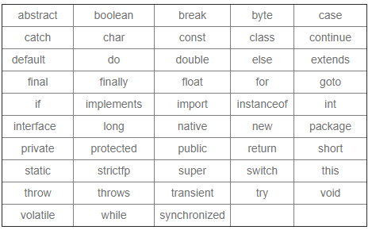
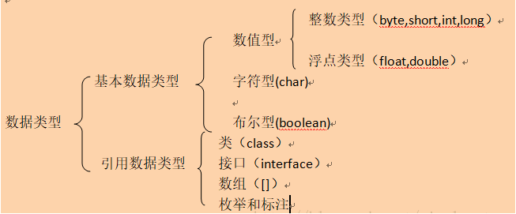
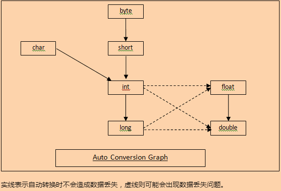
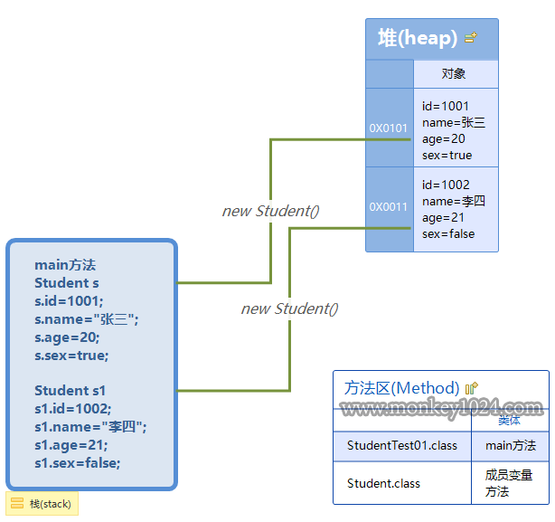
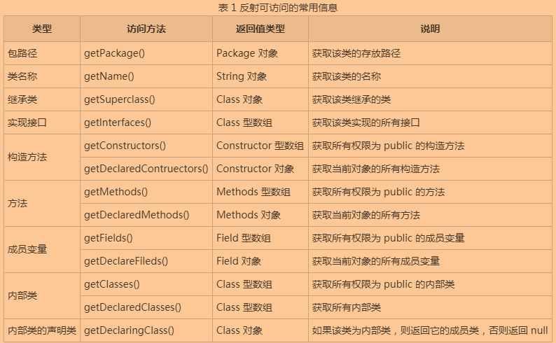
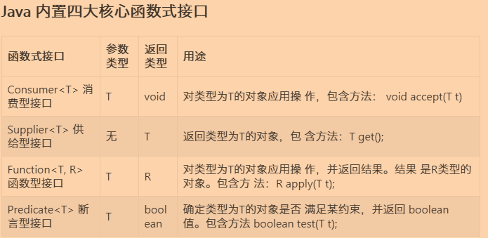
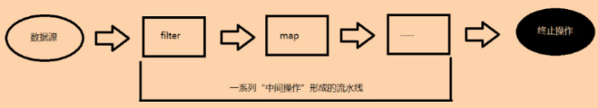
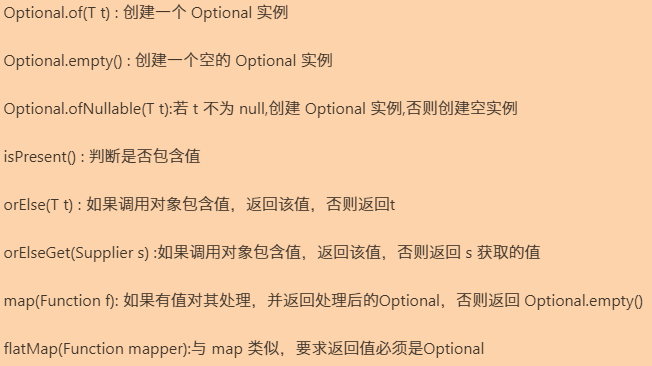

JavaSE–学习笔记(包含JavaSE视频，Java核心技术书籍)
Lesson1 Java概述
NO1.1 Java简介
Java是一门高级语言，高级语言下面还有汇编语言、机器语言。
- Java：
- 定义：简单地说，Java 是由Sun Microsystems公司于1995年推出的一门面向对象程序设计语言。2010 年Oracle公司收购Sun Microsystems，之后由 Oracle 公司负责 Java 的维护和版本升级；
- 构成：Java平台由 Java 虚拟机(Java Virtual Machine，JVM)和 Java 应用编程接口(Application Programming Interface，API)构成；
- Java 可分为 3 个体系，即 Java SE、Java EE 和 Java ME：
- Java SE(Java Platform Standard Edition，Java 平台标准版)以前称为 J2SE，它允许开发和部署在桌面、服务器、嵌入式环境和实时环境中使用的 Java 应用程序。Java SE 包含了支持 Java Web 服务开发的类，并为 Java EE 提供基础，如 Java 语言基础、JDBC 操作、I/O 操作、网络通信以及多线程等技术；
- Java EE(Java Platform Enterprise Edition，Java 平台企业版)以前称为 J2EE。企业版本帮助开发和部署可移植、健壮、可伸缩且安全的服务器端 Java 应用程序。Java EE 是在 Java SE 基础上构建的，它提供 Web 服务、组件模型、管理和通信 API，可以用来实现企业级的面向服务体系结构(Service Oriented Architecture，SOA)和 Web 2.0 应用程序；
- Java ME(Java Platform Micro Edition，Java 平台微型版)以前称为 J2ME，也叫 K-JAVA。 Java ME 为在移动设备和嵌入式设备(比如手机、PDA、电视机顶盒和打印机)上运行的应用程序提供一个健壮且灵活的环境，现在使用很少。
- 优点：
- 面向对象：Java是一种面向对象的语言，它对对象中的类、对象、继承、封装、多态、接口、包等均有很好的支持；
- 跨平台性。但是JVM不是跨平台的，因为JVM要根据不同的平台提供不同版本的JVM；
- 多线程：Java语言是多线程的，这也是 Java 语言的一大特性，它必须由Thread类和它的子类来创建；
- ….等等。
NO1.2 JVM、JRE、JDK
这三者的关系是什么呢？
- 定义：
JVM：Java虚拟机。即Java文件编译完成后得到的字节码文件，需要传给JVM解释并执行；JRE：Java运行环境。包含Java虚拟机(即JVM)、库函数、运行Java应用程序所必需的文件；JDK：Java开发环境。包含JRE、以及一些用于程序开发的文件；另外我们所说的安装Java，就是安装JDK的意思。
- 三者的关系：JDK包含JRE，而JRE包含JVM。
NO1.3 安装与配置Java
安装Java比较简单，但是不要安装错了版本。
- 安装Java：
- 下载：直接去Java官网下载对应的版本即可；
- 安装：这里没有什么特别需要注意的，只要自定义一个安装Java的目录即可。
- 配置JAVA(以WINDOWS为例)：
- 在环境变量里新建一个变量，名为
JAVA_HOME，值为JDK的安装目录即可； - 然后再在Path变量的值的最前面，配置
%JAVA_HOME\bin%;；注意：分号一定要写进去，字符全部英文小写。
- 在环境变量里新建一个变量，名为
- 配置JAVA_HOME的作用是：使得我们可以在任意目录下执行javac/java等工具命令。
NO1.4 命令行命令：javac和java
在我们使用编码工具之前，都是使用记事本直接写Java代码的。
- 命令行执行Java文件：
javac xxxx.java：当我们用记事本写完Java代码后，保存起来了，那么怎么运行呢？这就需要用到该命令了，即告诉JAVA编译这个文件。注意：编译xxxx.java时，xxxx文件名要与该文件中的类名保持一致，原因是：如果有一个public class类，就应该让文件名和此类名相同；那如果没有呢，即所有的class都没有修饰符，那么可以给该文件随便起名字。java xxxx：当编译完Java代码后，就可以使用该命令告诉JAVA执行这个文件。
NO1.5 IDEA的安装
为了提高我们编写代码的效率，我们使用IDEA集成工具来编写代码。
- IDEA：
- 定义：是一款用于Java语言开发的集成环境软件；
- 安装：去官网选择自己喜欢的版本安装即可。
Lesson2 JavaSE基础
NO2.1 注释
注释不会被执行，只是起到一个说明代码的辅助作用。
- 注释：
- 定义：用于解释和说明程序的文字；
- 特点：注释不会被JVM所执行，即不会出现在.class(字节码文件)当中。
- 注释的种类：
//：这是单行注释；/* */：这是多行注释；/** */：文档注释(Java特有)。
NO2.2 关键字与标识符
关键字，顾名思义，用户不能乱使用，是被Java语言中被赋予了特殊意义的单词。
关键字：
定义：被Java语言赋予特定含义的单词；
特点：组成关键字单词的字母全部小写。

- 标识符：
- 定义：就是给类、接口、方法、变量等起名字；
- 组成规则如下；
注意：标识符不能以数字开头，不能是Java中的关键字，且区分大小写。- 英文大小写字母；
- 数字字符；
- 可以用$和_开头；
- 变量名、方法名尽量遵循“驼峰规则”。
如，studentName、studentAge、eatFoot()、watchDoor()等等； - 常量的名称尽量都大写，多个单词用_隔开，这样方便区分变量和常量；
- 类、接口等标识符，单个单词首字母大写，或者多个单词，每个首字母都大写；
- 可以使用汉字，但是不建议。
NO2.3 变量、常量以及Java数据类型
常量和变量是Java程序中最基础的两个元素。
变量：
定义：值在程序运行期间可以被修改；
本质：是一个“可操作的存储空间”，空间位置是确定的，但是里面放置什么值，却是不确定的，我们可通过变量名来访问“对应的存储空间”，从而操作这个“存储空间”存储的值；
基本语法格式：
数据类型 变量名 = 初始化值。注意：变量必须先初始化以后才能使用。拓展：局部变量、成员变量、静态变量的位置 一、局部变量在方法或语句块内(即{ int a = 10;})；成员变量在类的内部成员位置；静态变量用static修饰，从属于类。
- 常量：
- 定义：值在程序运行期间无法被改变。是数据的直接表示，所以常量又称为字面常量；
如，final int a = 1，在整个程序运行期间，常量a的值都为1，无法再次被赋值； - 基本语法格式：
final 数据类型 变量名 = 初始化值。其实就是在变量的前面，添加一个关键字final，变量就会变成常量，常量一旦被赋值过一次之后就不能够再被赋予其他值。如，int i= 10，final int i = 10；
- 定义：值在程序运行期间无法被改变。是数据的直接表示，所以常量又称为字面常量；
Java数据类型的种类，如下图所示；
注意：整数默认int类型，小数默认double类型，long在数字后边加个L或l特别表示，float在数字后面加个F或f特别表示。如，long c = 10000000000L，不加L会报错。
注意：Java中有专门存放字符串的数据类型，即String类型，它属于引用类型；使用""表示，即用两个双引号表示。拓展：ASCII码表中常用值： 一、'A'十进制的值为65，B是66，后面字母依次加1类推，Z为90； 二、'a'十进制的值为97，b是98，后面字母依次加1类推，z为122； 三、'0'是48，后面字符依次加1类推，'9'是57。
NO2.4 自动类型转换和强制类型转换
数据类型之间的转换有两种。
数据类型转换：
自动类型转换(也叫隐式类型转换)：数值范围小的会自动向数值范围大的数据类型转换；

拓展：整数运算和浮点运算注意事项 一、整数运算： 1.如果两个操作数有一个为long，则结果也为long； 2.没有long时，结果为int；即使操作数全是byte、short、char(这三个先转为int再参与运算)，结果也是int。 二、浮点运算： 1.如果两个操作数有一个为double(默认的小数都是double类型)，则结果为double； 2.只有两个操作数都为float，则结果才为float； 注意：变量运算，会首先看数据类型，最终赋值时也会考虑数据类型问题；但是，常量运算，首先做运算后，看结果是否在该数据类型的范围内，如果不在范围内，才会报错；如： byte b1 =3; byte b2 =4; byte b; b = b1+b2; //这里会报错，因为变量相加，byte首先转成int然后再相加，结果为int，再赋值强制转换成byte，有可能损失精度，所以报错 b = 3+4; //这里的3和4是常量，在编译的时候就已经运算完毕，结果7在byte范围内，所以能够赋值给b，且没有报错 //========================================================== 拓展：值溢出问题 一、当两个操作数都为某一数据类型，相互运算后，得到的值超出了这个默认数据类型的范围，值就会变为负数。如： int a = 1000000000; //a=10亿 int years = 20; int total = a*years; //值为200亿，就超出了int类型的最大范围21亿，这时候得到的total就为一个负数 注意：解决如上问题，只需要将数据间的某个数据强制转换为值更大的数据类型即可，即：int total = a*(long)years；就能够解决值溢出的问题
强制类型转换(也叫显示类型转换)：从表示范围大的类型转换为表示范围小的类型，需要强制转换；
int a = 324; //因为int类型数值范围比long小，所以可以将值赋给b long b = a; //因为long类型的数值范围比double小，所以自动转换为double类型，但有可能损失精度 double c = b;
NO2.5 二进制、八进制、十进制、十六进制
进制，其实就是一个数据的不同形式表示。
- 进制：
- 定义：一个数据的不同形式表示；
- 常用进制：二进制、八进制、十进制、十六进制；
- 二进制：以
0b或者0B开头，由0和1构成； - 八进制：以
0开头，由0到7构成； - 十六进制：以
0x或者0X开头，由0到9、a(10)、b(11)、c(12)、d(13)、e(14)、f(15)构成。
- 二进制：以
- 规则：二进制就是逢二进一….，以此类推，十六进制就是逢十六进一等等；
进制间的转换：
任何进制转十进制：
每一位上的数据值*进制(二进制乘以二，八进制乘以八，十六进制乘以十六)^从右往左且幂从0开始；二进制的0b100，转为十进制： 1*2^2+0*2^1+0*2^0 = 4 八进制的0125，转为十进制： 1*8^2+2*8^1+5*8^0 = 85 十六进制的0x544，转为十进制： 5*16^2+4*16^1+4*16^0 = 1348十进制转任意进制：
直接用这个数除以进制数(二进制除以二，八进制除以八，十六进制除以十六)，直到商为0，余数反转即可；十进制的125，转为二进制：0b1111101； 125 / 2 = 62 余1 62 / 2 = 31 余0 31 / 2 = 15 余1 15 / 2 = 7 余1 7 / 2 = 3 余1 3 / 2 = 1 余1 1 / 2 = 0 余1 结果反转为1111101二进制和十进制的相互快速转换；
二进制转十进制：只需要将二进制上每个1位上的十进制数相加即可；
十进制转二进制：看十进制的值是否够二进制每一位的值，够的话则相应的二进制位为1，并减去该值，得到的差再继续比较，如果不够则为0；也就是我们常说的8421码：
二进制 1 1 1 1 1 1 1 1十进制 128 64 32 16 8 4 2 1二进制转十进制 0b1010100 = 64 + 0 + 16 + 0 + 4 + 0 + 0 = 84 十进制转二进制 100 = 0b1100100
任意进制到任意进制的转换：
先转成十进制再转成目标进制即可；
三位归并法(主要用于二进制转成八进制，而八进制转成二进制称为1位分三位)：每三位一组，不够位数的左边添0，求出每个三位的二进制值，最后结果拼接即可；
二进制0b1100110转八进制： 001 100 110 1 4 6 = 0146四位归并法(主要用于二进制转成十六进制，而十六进制转成二进制称为1位分四位)：每四位一组，不够位数的左边添0，求出每个四位的二进制值，最后结果拼接即可；
二进制0b1100110转十六进制： 0110 0110 6 6 = 0x66
NO2.6 原码、反码、补码
计算机内部的运算都是采用一个数的补码进行运算的。
- 在计算机内，有符号数(即正负数)有3种表示法(都是二进制)：原码、反码、补码；所有数据的运算都采用补码进行的；
原码：
注意：原码就是二进制定点表示法(你可以理解为其实就是二进制)，即最高位为符号位，0表示正数，1表示负数，其余位表示数值大小。正数：符号位为0的二进制；
负数：符号位为1的二进制。
+7 和 -7 二进制为：111 +7 的原码为00000111 -7 的原码则为10000111
反码：
正数：正数的反码与其原码相同；
负数：负数的反码是对其原码逐位取反(即0变1，1变0)，但符号位不变；
+7 的原码为00000111，反码也是00000111 -7 的原码为10000111，反码则是11111000
补码：
正数：正数的补码和原码相同；
负数：负数的补码是在其反码的末位(即数值位的最右边的一位)加1；
+7 的原码为00000111，反码也是00000111，补码仍然为00000111 -7 的原码为10000111，反码则是11111000，补码变成11111001
NO2.7 运算符
运算符有许多种，常用在变量、表达式、方法中等等。
算数运算符：
+、-、*、/、%：即加、减、乘、除、和取余；注意：这里的减号，除了用作减号外，还可以用作负号；加号除了用作加号，还能当作正号和字符串连接符。拓展：取模运算、整数相除的注意事项 一、取模运算(即取余运算)中，获得的余数的符号和%号前面的数(被除数)符号相同； 如： 9%(-5)=4; -9%5=-4; 二、整数相除只能获得整数，想要获得小数，将其中一个操作数转换为double类型即可； 如： 3/4 =0; 3*1.0/4=0.75;++、--：即自增和自减。单独使用时：自身的值只是单纯的加一或者减一；
和其他操作数一起使用时：
++/--操作数：先加一或者减一，再进行操作；操作数++/--：先操作，然后再加一或者减一。int a =1; a++; 或 ++a; //结果都一样，为2 a=2 //=================================== int a = 3; //先自增然后再操作，即先a+1，再赋值给b int b = ++a; //所以，结果为 a=4,b=4 //-------------------------------------- //先赋值给b，然后a再自增 int b = a++; //所以，结果为 a=4,b=3
赋值运算符：
=：为变量或常量指定数值的符号；注意：不要将赋值运算符与相等运算符“==”混淆。+=、-=、*=、/=、%=：将该运算符左边的数值与右边的数值进行加减乘除取余操作(只有一种生效)， 得到的结果赋值给左边变量本身。int a=5; a+=2; a=7 拓展：a = a+1 和 a+= 1的区别 一、a+=b，即a=(a的数据类型)(a+b)，隐含了强制类型转换； 二、a=a+1则不含强制转换。 如： short s = 1; //这里的s+1结果为int类型，转为short时，会报错，因为有可能损失精度 s = s + 1; //等价于s = (s的数据类型)(s+1)，因为隐含了强制类型转换，所以赋值给s不会报错； s += 1; //=========================================== 拓展：乘除扩展运算 一、如下所示： 如： a*=b+3; a=a*(b+3);
关系运算符：
>、>=、<、<=、==、!=：也称为“比较运算符”，用来比较判断两个变量或常量或表达式的大小。运算结果是boolean型。当运算符对应的关系成立时，运算结果是true，否则是false。4==4 //结果为true 97=='a' //结果为true 5.0==5 //结果为true true==false //结果为false 4!=2 //结果为true
- 逻辑运算符：
注意：逻辑运算符是对布尔型变量进行运算，其结果也是布尔型。&：逻辑与。如，a&b，a和b 全为true时，计算结果为true，否则为false；|：逻辑或。如，a|b，a和b 全为false时，计算结果为false，否则为true；!：逻辑非。如，!a，a 为true时，值为false，a 为false时，值为true；&&：短路与。如，a&&b，a和b 全为true时，计算结果为true，否则为false；- &&与&区别：如果a为false，则不计算 b(因为不论 b 为何值，结果都为 false)。
||：短路或。如，a||b，a和b 全为false时，计算结果为false，否则为true；- ||与|区别：如果a为true，则不计算 b(因为不论 b 为何值，结果都为 true)。
^：逻辑异或。如，a^b，a和b都相同，则返回false，不同则返回true。
位运算符：
&：与。对两个操作数的补码进行操作，简记：有0则0，两1为1；|：或。对两个操作数的补码进行操作，简记：有1则1，两0为0；~：非。对一个操作数的补码进行操作，简记：0变1，1变0；^：异或。对两个操作数的补码进行操作，简记：相同则0，不同则1<<：左移运算符。简单的说就是将操作数的补码进行左移操作，左移1位，相当于乘以一个2，左移2位，乘以两个2；即该数的补码，向左移动指定位数，不论正负数，左边最高位丢弃，右边用0补齐；如，3<<2= 3*2*2 = 12。>>：右移运算符。简单的说就是将操作数的补码进行右移操作，右移1位，相当于除以一个2取商，右移2位，除以两个2取商；该数的补码，向右移动指定位数，最高位是0，左边用0补齐；最高位是1，左边补齐1；如，12>>2= 12/2/2 = 3。>>>：无符号右移。即该数的补码，向右移动指定位数，然后符号位不论0还是1，都用0补齐；3的二进制：0x11 4的二进制：0x100 3 & 4 (&位与运算：有0则0)： 00000000 00000000 00000000 00000011 ---3的二进制补码 & 00000000 00000000 00000000 00000100 ---4的二进制补码 ----------------------------------------- 00000000 00000000 00000000 00000000 结果为0 3 | 4 (|位或运算：有1则1)： 00000000 00000000 00000000 00000011 ---3的二进制补码 | 00000000 00000000 00000000 00000100 ---4的二进制补码 ----------------------------------------- 00000000 00000000 00000000 00000111 结果为7 3 ^ 4 (^位异或运算：相同则0，不同则1)： 00000000 00000000 00000000 00000011 ---3的二进制补码 ^ 00000000 00000000 00000000 00000100 ---4的二进制补码 ----------------------------------------- 00000000 00000000 00000000 00000111 结果为7 ~ 3 (~按位取反运算：0变1，1变0)： ~ 00000000 00000000 00000000 00000011 ---3的二进制补码 ----------------------------------------- 11111111 11111111 11111111 11111100 补码：11111111 11111111 11111111 11111100 反码：11111111 11111111 11111111 11111011 原码：10000000 00000000 00000000 00000100 ---结果为-4 注意：^(位异或运算)的特点：一个数对另一个数位异或两次，最后的结果仍然为第一个数。如： int a =10; int b =20; a^b^b = 10; a^b^a = 20;
- 三元运算符：
- 基本语法格式：
x?a:b。即，当x(该x为boolean表达式)为true时，输出a，反之则输出b，三元运算符一定返回一个结果，所以必须有变量去接收这个结果。
- 基本语法格式：
NO2.8 获取用户输入
我们常常会想要获取用户的输入。
获取用户输入：
基本语法格式：
Scanner sc = new Scanner(System.in); //获取键盘录入的对象 System.out.println("请输入您的名字"); //为了提升用户体验，添加了这句代码 String inputName = sc.nextLine(); //接收数据
NO2.9 流程控制语句
我们使用流程控制语句来控制程序的走向。
基本流程控制语句：
if：符合条件就进入，否则就不进入。最简单的流程控制语句；基本语法格式：
if(条件表达式){ 要执行的代码 }
if-else：二选一，即要么进入if代码块中，要么进入else代码块中；基本语法格式：
if(条件表达式){ 要执行的代码 }else{ 要执行的代码 }
if-elseif-else：可以有多重选择(也就是可以有多个elseif)，但只会选择进入一个；基本语法格式：
if(条件表达式){ 要执行的代码 }elseif{ 要执行的代码 }....{ 要执行的代码 }else{ 要执行的代码 }
switch-case：也是在多个选择中选择一个进入。基本语法格式：
switch(条件表达式){ case 常量1: 要执行的语句 break; case 常量2: 要执行的语句 break; .... default: //前面都没有匹配上的话，就会走这里，和if-else中的else差不多 要执行的语句 break; } 拓展：case穿透 一、switch选择结构语句中，case后面放的是常量； 二、一定要在语句体中写break，否则会产生case穿透，即语句一直往下走，直到有break的语句体中。如： switch(1){ case 1:{ //如果这里没有break，则程序会继续执行下面语句的内容，产生case穿透 System.out.println("这是1"); //break; } case 2:{ System.out.println("这是2"); break; } } 注意：上面的输出结果为：这是1，这是2，两条语句输出，这是因为case 1 的语句体中没有break，产生case穿透
循环控制语句：
for循环：是有限次数的循环；基本语法格式：
for(初始化条件;循环判断条件;迭代条件){ 循环体代码 } 拓展：foreach循环，该方式用的频率很高，牢记 for(类型 变量名:集合) { 语句块; } //=========================== 拓展：死循环的写法 一、for(;;)，要避免死循环。 //=========================== 拓展：九九乘法表 一、代码如下： for(int h =1;h<=9;h++) {//外循环控制行 for(int i=1;i<=h;i++) {//里循环控制列 System.out.print(i+"*"+h+"="+h*i+"\t"); } //这是每输出一行后，进行换行 System.out.println(); }
while循环：无限次数的循环；基本语法格式：
while(循环判断条件){ 循环体代码 } 拓展：死循环的写法 一、while(true)，要避免死循环。另外，循环之间可以嵌套使用，即多重循环。
do-while循环(Java中用的不多)：也是无限次数的循环，只不过和while不同的是，该循环会先进行循环再查看是否符合循环条件。基本语法格式：
do{ 循环体代码 }while(循环判断条件)
continue、break、return关键字。
continue：是指当符合条件时，continue会跳出当前循环(也就是continue后面的语句不会执行)，并进行下一次循环；
break：是指当符合条件时，break会跳出循环，即停止循环；
return：是指结束方法，后面的语句不会再执行；
//输出100至150之间的所有不能被3整除的数，并且每行输出5个 int count =0; for(int n = 100; n <= 150; n++){ //当n为被3整除的数时，就进入这里，并跳出当前循环，进入下一次循环 if(n%3==0){ //遇到continue，跳出当前循环(continue后面的代码不再执行)，进入下一次循环 //continue; System.out.println("我是continue后面的代码，我是永远不会执行的，因为已经进入下一次循环了"); //遇到break关键字，直接停止循环 //break; } //打印输出不能被3整除的数字 System.out.print(n+"\t"); //定义一个统计变量，判断是否需要进行换行操作，也就是输出5个数字后进行换行操作 count++; if(count==5){ //换行 System.out.println(); //初始化count变量值 count=0; } }
NO 2.10 数组
数组是同一类型数据的集合。
数组：
定义：即同一类型数据的集合，就称为数组。
如，一个公司，都是为公司工作的人，那么这个公司其实就可以看成是一个数组，因为都存放了为公司工作的人这种同一类型的数据。数组的三个基本特点；
- 长度是确定的。数组一旦被创建，它的大小就是不可以改变的；
- 其元素必须是相同类型，不允许出现混合类型；
- 数组类型可以是任何数据类型，包括基本类型和引用类型，但数组的所有元素必须是同一数据类型。
基本语法格式：
注意：根据数据类型初始化默认值，基本类型是0，引用类型是null，布尔类型是false，char类型是'\u0000'(即空字符，什么都没有)。- 动态初始化数方式(默认是该方式初始化数组)：
数据类型[] 变量名 = new 数据类型[长度]。如，int[] arr1 = new int[10]，该数组长度是10，下标为0到9，即0到arr.length-1。 - 静态初始化数组方式(推荐这个方式)：
数据类型[] 变量名 = {元素1,元素2..}。如，int[] arr2 = {1,2,3,4,5}，该数组长度是5。
- 动态初始化数方式(默认是该方式初始化数组)：
数组长度：
数组名.length；数组元素赋值：
数组名[索引值]=值；注意：索引是从0开始的。数组调用：
数组名[索引值]。拓展：数组反转(推荐用这个) 如： public void myArrayReverse2(int[] array){ for(int start =0,end = array.length-1;start <= end;start++,end--){ int temp = array[start]; array[start] = array[end]; array[end] = temp; } }
二维数组：
定义：就是元素为一维数组的一个数组；
基本语法格式：
动态初始化：
数据类型[][] 数组名 = new 数据类型[m][n]。 m：这个二维数组中有m个一维数组；n表示，每一个一维数组的元素有n个，但是n一般不直接定义，都是动态定义的，即n可以不用定义：数据类型[][] 数组名 = new 数据类型[m][]。静态初始化：
数据类型[][] 数组名=new 数据类型[][]{ {x},{x},{x} }。(推荐)简化版：数据类型[][] 数组名={ {x},{x},{x} }。拓展：二维数组的遍历 如： public void traversingElements(int[][] arr){ for(int x =0;x<arr.length;x++){ for(int y = 0;y<arr[x].length;y++){ System.out.println(arr[x][y]); } } }
NO2.11 Arrays工具类
我们可以使用Arrays工具类来对数组进行一些方便的操作。
- Arrays类常见的方法：
- String toString(int[] arr)：把数组转成字符串；
- void sort(int[] arr)：对数组进行排序；
- int binarySearch(int[] arr,int key)：二分查找，返回要查找的元素的索引值；
NO2.12 冒泡排序、选择排序、二分查找法
常见的算法是我们必须要会的。
冒泡排序(重要)：
public static void arrayReverse(int[] arr) { //外循环控制比较的次数，最大次数为数组长度-1 for(int count=0; count<arr.length-1; count++) { //内循环两两比较，-1是为了不超出最大索引，-count是为了去除已经参与比较过的元素个数 for(int x=0; x<arr.length-1-count; x++) { if(arr[x] > arr[x+1]) { int temp = arr[x]; arr[x] = arr[x+1]; arr[x+1] = temp; } } } }
选择排序；
public static void arrayReverse2(int[] arr) { //假设一个最小值的索引，依次+1，最多能到最大索引-1 for (int min = 0; min < arr.length - 1; min++) { //与数组的第min+1位索引开始比较 for (int x = min+1; x < arr.length; x++) { if (arr[x] < arr[min]) { int temp = arr[min]; arr[min] = arr[x]; arr[x] = temp; } } } }
二分查找法(注意：该查找法必须要求数组是有序的)：
public static int findElement(int[] arr,int value) { int minIndex = 0; //最小索引 int maxIndex = arr.length-1; //最大索引 int midIndex = (minIndex + maxIndex)/2; //中间索引 //先判断是否比数组中最大的还大，比最小的还小，则不存在该元素，直接返回-1 if(value > arr[maxIndex] || value < arr[minIndex]){ return -1; } while(value != arr[midIndex]) { if(value < arr[midIndex]) { //假设要查找的值，比中间的值小 maxIndex = midIndex-1; //最大索引变为中间索引-1 }else { //假设要查找的值，比中间的值大 minIndex = midIndex+1; //最小索引值变为中间索引+1 } midIndex = (minIndex + maxIndex)/2; //继续求中间索引 } return midIndex; }
Lesson3 面向对象基础
NO3.1 类和对象
对Java来说，一切皆是对象。面向对象的三大核心特性：继承、封装和多态。
类和对象：
解释：
- 类：实际上表示的是一个客观世界某类群体的一些基本特征抽象；你可以理解为就像设计图一样，用这个来创造东西；
- 对象：表示的是一个个具体的东西。所以说类是对象的抽象，对象是类的具体。用设计图创造出来的东西就叫做对象。
定义：
- 类：是概念模型，定义对象的所有特性和所需的操作。
- 对象：是真实模型，是一个具体的实体。
如，“人类”只是一个抽象的概念，它仅仅是一个概念，是不存在的实体！但是所有具备“人类”这个群体的属性(一些参数、数值)与方法(一些行为，他能干什么)的对象都叫人！这个对象“人” 是实际存在的实体！每个人都是“人类”这个群体的一个对象。
地位：在面向对象中，类和对象是最基本、最重要的组成单元。
属性：对象或实体所拥有的特征在类中表示时称为类的属性。
如，每个人都具有姓名、年龄和体重，这是所有人共有的特征。但是每一个对象的属性值又各不相同，就像小明和小红都具有体重这个属性，但是他们的体重值是不同的。方法：对象执行的操作称为类的方法。
如，“人”这个对象都具有的行为是“吃饭”，因此，吃饭就是“人”类的一个方法。基本语法格式：
类：
public class 类名{ // 定义属性部分(也叫成员变量) 属性数据类型 属性名1; 属性数据类型 属性名2; //定义方法部分(也叫成员方法) function1(); function2(); function3(); } 如： public class Student{ String name; int age; public void study(){ System.out.println("正在学习"); } public void eat(){ System.out.println("正在吃饭"); } }对象：
类名 对象名 = new 类名(); //创建了一个对象 对象名.属性 //对象调用它内部的属性 对象名.方法 //对象调用它内部的方法 如： Student s1 = new Student(); s1.name; s1.age; s1.study(); s1.eat();方法声明：
public 返回值类型 方法名(参数列表){ 方法体 } 注意：void：表示该方法没有返回值。 如： public int getSum(int a,int b){ int res = a + b; return res; }
NO3.2 JVM中的堆、栈、方法区
Java内存是一个比较有趣的地方。
Java虚拟机的内存可以分为三个区域：
栈(stack)、堆(heap)、方法区(method area)；栈(stack)：- 特点：
- 先进后出，后进先出，类似于子弹夹的结构；
- 由系统自动分配，速度快，是一个连续的内存空间；
- 栈内存的数据使用完毕后，就消失了，即被回收；
- 栈属于线程私有，线程间不能实现栈的共享。
- 作用：
- 方法的调用，是在栈(stack)中进行的；
- JVM为每个线程创建一个栈，用于存放该线程执行方法的信息(实际参数、局部变量等)；
- 特点：
堆(heap)：- 特点：
- 堆是一个不连续的内存空间，分配灵活，但速度慢；
- JVM只有一个堆，被所有线程共享。
- 作用：
- 堆(heap)用于存储创建好的对象和数组(数组也是对象)，即new出来的都在这里，并且有地址值和默认值。
- 特点：
方法区(method area)：特点：
- JVM只有一个方法区，被所有线程共享。
作用：
用来存放程序中永远不变或唯一的内容(类的信息、静态信息、字符串常量等)；
方法区实际也是堆，只是用于存储类、常量相关的信息。

NO3.3 静态变量、成员变量、局部变量
除了成员变量，还有静态变量和局部变量。
- 静态变量：
- 定义：在类中，用
static关键字声明的成员变量为静态成员变量，也称为类变量； - 生命周期：类变量的生命周期和类相同，在整个应用程序执行期间都有效，即被所有对象所共享；static修饰的变量被修改后，所有对象的该属性都会被修改；
- 区别：
- static修饰的成员变量和成员方法，从属于类；
- 普通变量和方法从属于对象。
- 权限：
- static修饰的部分，只能访问static修饰的其他部分，无法访问非static的部分，即static只能访问static修饰的部分；
- 相反，非static部分，可以访问所有static修饰的部分和非static的部分，即，非static可以访问所有；因为static修饰部分从属于类，非static修饰的部分从属于对象。
- 定义：在类中，用
成员变量和局部变量的区别：
在类中的位置不同：
- 即成员变量在类中方法外；
- 局部变量在方法中(即方法内部)或方法声明上(即形式参数)。
在内存中的位置不同：
- 即成员变量在堆内存；
- 局部变量在栈内存。
生命周期不同：
- 即成员变量随对象创建而存在，随对象消失而消失；
- 局部变量随着方法的调用而存在，随着方法调用完毕而消失。
初始化值不同：
即成员变量有默认初始化值；
拓展：如果声明成员变量时没有对其初始化，则系统会使用默认值初始化成员变量。初始化的默认值如下 一、整数型(byte、short、int和long)的基本类型变量的默认值为0； 二、单精度浮点型(float)的基本类型变量的默认值为0.0f； 三、双精度浮点型(double)的基本类型变量的默认值为0.0d； 四、字符型(char)的基本类型变量的默认值为 “\u0000”； 五、布尔型的基本类型变量的默认值为 false； 六、数组引用类型的变量的默认值为null，如果是数组元素是基本数据类型，那么根据数据类型取值。如，int[] arr，那么该数组中的元素默认初始组都是0。
- 局部变量没有默认初始化值，必须先定义，然后赋值，最后才可以使用；
- 成员变量和静态变量的区别：
- 所属不同：
- 即成员变量属于对象；
- 静态变量属于类。
- 内存中位置不同：
- 即成员变量存储于堆内存；
- 静态变量存储于静态区。
- 内存出现时间不同：
- 即成员变量随着对象的创建而存在，随着对象消失而消失；
- 静态变量随着类加载而存在，随着类消失而消失。
- 调用不同：
- 即成员变量只能通过对象调用；
- 静态变量可以通过类名调用，也可以通过对象调用。
- 所属不同：
NO3.4 匿名对象
匿名对象，就是没有名字的对象，即没有对象名。
匿名对象：
定义：没有对象名的对象；
使用场景：只使用一次，但又不想创建一个对象的时候，就可以使用匿名对象；
基本语法格式：
new 类名(){ 需要实现的方法 } new 类名(){ 需要实现的方法 }.属性 new 类名(){ 需要实现的方法 }.方法 如： new Student().name; new Student().age; new Student().eat();
NO3.5 方法重载
两个方法的声明，除了参数列表不一样，其他完全一样的，就称为方法重载。
Overload：定义：即方法名相同，参数列表不同；与返回值类型无关。也就是说我们可以定义一些声明大部分相同的方法，通过定义不同的输入参数来区分这些方法，然后在调用时，虚拟机就会根据不同的参数，来选择合适的方法执行；
public void show(int a){ ... } public int show(int a,int b){ ... } //上面这两个方法就是方法重载方法名相同，但参数列表不同 拓展：可变参数列表 一、JDK5.0新增内容。可变参数就是指可以用一个参数代替多个参数，但必须都是同一类型的参数。 如： public void show(int ... a) //这里的int参数可以放许多个，但必须都是int类型
Override：- 定义：是方法覆盖的意思，也就是重写(后面讲接口的时候会讲)；它是覆盖了一个方法并且对其重写，以求达到不同的作用；
NO3.6 参数传递
方法中的参数可以是基本数据类型，也可以是引用数据类型。
参数传类型：
基本数据类型：该类型作为参数传递时，形式参数的改变对实际参数没有影响。即基本类型只是值传递(就是把值拷贝给了方法使用而已)，无论做什么操作，原本的基本数据类型的值不会改变；
注意：String作为形式参数，和基本数据类型是一样的，只是值传递，不改变实际参数。int a = 0; public void getSum(int a){ //只是值的一个复制，不会影响原先a的值 int b = 1; int res = a + b; }引用数据类型：该类型作为参数传递时，形式参数的改变直接影响实际参数；即引用类型传递的是地址值，对该地址进行操作后，原先的地址里的内容，也会发生改变；
Student s = new Studeng();
public void getSum(Studeng stu){ //把对象的地址值传递给了方法去操作，
stu.age = 5; //这里设置了stu对象的age属性为5，因为传递的是地址值，所以stu中的age属性就被改成了5 } ### NO3.7 封装和权限修饰符 我们自己创造的类，它的属性、方法一般不会给让用户自己随意更改和调用，这就需要给属性和方法设置一个权限。 - 封装： - 定义：封装是将代码及其处理的数据绑定在一起的一种编程机制，该机制保证了程序和数据都不受外部干扰且不被误用； - 目的：封装的目的在于保护信息。 - 权限修饰符： - 定义：用于给属性、方法设置访问权限的关键字； - 基本语法格式： ```java 修饰符 同一个类 同一个包中 不同包下子类 所有类 private √ default √ √ protected √ √ √ public √ √ √ √ 说明：权限修饰符 一、private表示私有，只有本类能访问； 二、default表示没有修饰符修饰，只有同一个包下的类能访问； 三、protected表示受保护，可以被同一个包下的类以及其他包中的子类访问； 四、public表示可以被该项目的所有包中的所有类访问。
NO3.8 构造方法
构造方法，其实就是我们根据类来创建对象时，所用的方法。
构造方法：
定义：顾名思义，就是用来构造对象的方法；
作用：创建对象时使用；
种类：
- 无参构造方法；
- 带参构造方法。
基本语法格式：
//无参构造方法 public 类名称() { 方法体 } //---------------------------- //带参构造方法 public 类名称(参数类型 参数名称) { 方法体 } 如: public class Student{ //成员变量 String name; int age; //无参构造方法 public Student(){} //带参构造方法 public Student(String name){ this.name = name } //成员方法 public void study(){ System.out.println("学习学习"); } }
NO3.9 this关键字
this关键字指向的是当前对象的引用。
this：定义：指向当前对象的引用，即你可以理解为当前类创建的一个对象。
应用：
this.属性名：调用本类中的属性，也就是类中的成员变量；this.方法名：调用本类中的其他方法，也就是类中成员方法；this(参数列表)：调用本类中的其他构造方法，调用时要放在方法内部的首行。public class Student{ //成员变量 String name; int age; //无参构造方法 public Student(){} //带参构造方法 public Student(String name){ this.name = name } //成员方法 public void eat(){ System.out.println("吃饭吃饭"); } //成员方法 public void study(){ this("this调用带参构造方法") //this调用构造方法 this.age = 10; //this调用属性 this.eat(); //this调用方法 System.out.println("学习学习"); } }
NO3.10 继承
继承，顾名思义，就是父类的东西，能够被子类所获取。这和现实生活中的父子概念有点相似。
继承：
定义：Java中的继承就是在已经存在的类的基础上进行扩展，从而产生新的类。已经存在的类称为父类、基类或超类，而新产生的类称为子类或派生类。在子类中，不仅包含父类的属性和方法(不包括构造方法)，还可以增加新的属性和方法，以及重写父类的一些方法。
基本语法格式：
权限修饰符 class 子类名 extends 父类名 { 类的主体 } //========================================================== 拓展：继承的一些知识 一、Java中的所有类，都继承自一个类，这个类就是Object类。 二、在Java继承中，子类不能够访问父类的私有属性和私有方法，即用private修饰的属性和方法； 三、在Java继承中，子类变量名和父类变量名相同，根据就近原则，先找子类方法中有没有，然后找子类成员位置有没有，最后找父类成员位置有没有； 四、子类中的任何构造方法，都会默认先调用父类的无参构造方法。原因是，子类继承了父类，有可能需要访问父类的数据，所以必须要先初始化父类数据才能让子类访问，即子类的构造方法的第一句永远是super()，也就是父类的无参构造方法，我们看不到是因为该方法是隐含的； 五、Java中的继承只有单继承，没有多继承，但是可以多层继承。 六、子类继承父类后，在子类中，可以重写父类所拥有的方法；但是在创建子类对象后，调用重写的方法时，调用的是子类本身中那个方法，而不是父类的同名方法，要想调用父类的方法，就使用关键字Super； 七、在方法覆盖中，子类要重写的方法，其方法声明(即除开方法体的部分)必须和父类方法保持一致。 如： public class Person{ .... } //---------------------- public class Teacher extends Person{ .... }
NO3.11 Super关键字
子类继承父类后，如果我们想调用父类某些属性、方法，就需要使用Super关键字。
- super：
- 定义：你可以理解为是当前类的父类创建的一个对象，是Java中用来调用父类属性或方法的关键字；
- 应用：
注意：Super只在子类中出现，是父类存储空间的标识。super.属性名：获取父类中的某个属性值；super.方法名()：直接调用父类中的某个方法；super(参数列表)：调用父类的某个构造方法。你所调用的父类构造方法根据括号里的内容的变化而改变(即有参数就调用有参构造，没有参数就调用无参构造)；
NO3.12 多态
多态是Java中特性又一个特点。
- 多态：
- 定义：是指在父类中定义的属性和方法被子类继承之后，不同的子类可以具有不同的数据类型或表现出不同的行为；
- 特点：
- 多态是方法的多态，不是属性的多态(多态与属性无关);
- 多态的存在要有3个必要条件：继承，方法重写，父类引用指向子类对象(即
父类名 对象名 = new 子类名())； - 父类引用指向子类对象后，用父类引用调用子类重写的方法，此时多态就出现了；
- 多态中的成员访问特点：
- 成员变量：编译看左边，运行看左边；
- 构造方法：创建子类对象的时候，会访问父类的构造方法，对父类的数据进行初始化；
- 成员方法：编译看左边，运行看右边；
- 静态方法：编译看左边，运行看左边(静态和类相关，算不上重写，所以，访问还是左边的)；
NO3.13 多态中的向上转型和向下转型
多态的必要条件之一就是向上转型。
多态的自动向上转型和强制向下转型：
自动向上转型：当父类引用指向子类对象后，就被称为自动向上转型，但是当子类中拥有自己特有的方法时，父类引用就无法访问子类中的这些特有的方法；
Animal a = new Dog() //对象a就是父类引用，等号右边的new Dog()就是子类对象强制向下转型：父类引用想要访问子类中特有的方法时，就需要将父类引用强制向下转换成子类对象，转换后，该子类引用可以访问父类和子类本身拥有的方法。
//这是父类Animal，拥有eat()和sleep两个方法 public class Animal { public void eat() { System.out.println("动物吃吃吃..."); } public void sleep() { System.out.println("动物睡觉觉..."); } } //--------------------------------------------- //这是子类Dog，继承了Animal,拥有重写后的eat()方法和子类特有seeDoor()方法 public class Dog extends Animal { public void eat() { System.out.println("狗子吃吃吃..."); } public void seeDoor() { System.out.println("狗子看门门..."); } } //----------------------------------------------- //测试 public class Test { public static void main(String[] args) { //这是自动向上转型，父类引用a，指向子类对象new Dog() Animal a = new Dog(); //输出：狗子吃吃吃...，因为子类复写了eat()方法，所以调用的是子类中的eat()方法 a.eat(); //输出：动物睡觉觉...，调用父类中的sleep()方法，因为是父类引用，所以失去了子类中特有的seeDoor()方法 a.sleep(); System.out.println("------------分隔符"); Dog d = (Dog)a; //这是强制向下转型 d.eat(); //狗子吃吃吃...，调用的是子类复写后的eat()方法 d.sleep(); //动物睡觉觉...，调用的是父类中的sleep()方法 d.seeDoor(); //狗子看门门...，调用的是子类中特有的seeDoor()方法 } } 拓展：instanceof关键字 一、该关键字用于判断某个对象是否是某个类生成的对象。对象名 instanceof 类名。
NO3.14 Object类中常见的方法
Object是Java中所有类的父类。
- Object类的常见方法：
hashCode()：是指根据哈希算法，将对象的内存地址转换成一个整数值；toString()：一般子类会重写该方法，即把该类的成员变量用字符串显示输出就行；equals()：用于比较引用类型中的某些值是否相等。“==”和equals()方法的区别：- 如果比较基本数据类型；
==：比较的是基本数据类型的值；equals()：是不存在的，因为int、float等是基本数据类型，不是对象，就没有equals()方法，不存在int.equals()。
- 如果比较的是引用数据类型；
==：比较的是两个引用是否指向同一个对象实例，即比较的是在内存中的地址值；equals()：首先看调用equals()方法的对象，其equals方法是否被重写，如果有被重写则按照重写的规则比较；没有重写则与==比较规则一样，一般来说，重写equals()方法后，比较的是对象的成员变量是否相同即可。
- 如果比较基本数据类型；
NO3.15 包装类
基础数据类型是无法调用equals()方法的，所以包装类出现了。
包装类
定义：用于将基本数据类型封装成对象的类。常用的操作之一：用于基本数据类型与字符串之间的转换；
基本数据类型的包装类(按照字节大小排列，其中boolean除外)：
基本数据类型 包装类型 byte ---> Byte short ---> Short int ---> Integer long ---> Long boolean ---> Boolean char ---> Character float ---> Float double ---> Double 拓展：自动装箱和自动拆箱(JDK5.0以后) 一、自动装箱：就是将基本数据类型自动封装成对应的包装类型； 如： Integer a = 100; //等价于 Integer a = Integer.valueOf(100)，这是自动装箱； 二、自动拆箱：就是将包装类型转成对应的基本数据类型； 如： int b = a; //等价于int b = a.intValue()，这是自动拆箱； //======================================================= 拓展：Integer包装类缓存了一个数组，这个数组的范围是-128到127之间； 如： Integer a = -128; Integer b = -128; System.out.println(a==b); //true，因为integer会缓存一个数组，当调用valueOf()方法时，会匹配对比这个范围内的值，是否可以直接从这个数组获取，如果有目标值，就不会开辟空间创造新的包装类对象，所以这里是true,否则就创建新的包装类对象 System.out.println(a.equals(b)); //true，这里比较的是值，所以是trueJDK5以后新增的特性：
泛型：即“宽泛的数据类型”，放入的是引用数据类型或者自定义类。一般用”
<T>“表示泛型；泛型通配符包括：<? extends E>：上限通配符，表示 ?必须是E的子类或者就是E类本身；<? super E>：下限通配符，表示 ?必须是E的父类或者就是E类本身。
枚举：即enum，主要用于定义一组可以使用的类对象。详细的细节后面章节会讲；
自动装箱与拆箱：简单一点说，装箱就是自动将基本数据类型转换为包装器类型；拆箱就是自动将包装器类型转换为基本数据类型；
增强for：for循环的增强版本，也叫foreach循环；
for(集合或数组中元素的数据类型 变量名 : 被遍历的集合或数组){ 遍历操作 } 注意：被遍历的集合或数组不可以为null。可变参数：不确定要传递的参数的个数时，就可以使用可变参数，其实可变参数是一个数组；格式：数据类型… 参数名
public void sum(int... a){...}; 注意：可变参数 int... a，其实是一个数组，想要获取其中的参数参照遍历数组即可。静态导入：对import语句的增强，格式：import static 包名….类名.方法名。
NO3.16 static关键字
static是一个修饰符，能够修饰许多东西。
- static：
- 定义：用于修饰的修饰符；
- 应用：
- static 变量：用static修饰的变量，称为静态变量，也叫做类变量，因为从属于类。使用
类名.静态变量调用静态变量；注意：静态变量是该类所有对象所共享的。 - static 方法：用static修饰的方法，称为静态方法，也就叫做类方法，也是从属于类。使用
类名.静态方法调用静态方法；
- static 变量：用static修饰的变量，称为静态变量，也叫做类变量，因为从属于类。使用
NO3.17 静态代码块、构造代码块、构造方法
静态代码块、构造代码块、构造方法的执行顺序是….
代码块根据位置不同分为：
- 局部代码块：在方法内部位置，用于限定变量生命周期，提高内存利用率；
- 构造代码块：在类中成员位置，用于存放构造方法中相同的代码，每次调用构造方法之前都会执行；
- 静态代码块：在类中方法外位置，随着类的加载而加载，用于类进行初始化。
执行顺序：静态代码块(只加载一次)>构造代码块>构造方法。
class Student{ //静态代码块 static { System.out.println("Student的静态代码块"); } //构造代码块 { System.out.println("Student的构造代码块"); } //构造方法 public Student(){ System.out.println("Student的构造方法"); } } //---------------------------------------- public class Test { //静态代码块 static { System.out.println("拥有main方法的类的静态代码块"); } public static void main(String[] args) { System.out.println("我是main方法"); Student s1 = new Student(); Student s2 = new Student(); } } 输出结果： "拥有main方法的类的static代码块" "我是main方法" "Student的静态代码块" //从这开始是s1 "Student的构造代码块" "Student的构造方法" "Student的构造代码块" //从这开始是s2 "Student的构造方法" 说明：Student类中的三个代码块，前提是有对象才能输出，所以优先进入main方法去new Student()，在此之前，main方法之前还有一个代码块，所以该static代码块最先执行，其次main方法，最后是Student对象的三个代码块(static代码块优先、构造代码块其次，最后构造方法)。
NO3.18 final关键字
final可以修饰变量、方法、类等等
final：
定义：也是一个修饰符，表示最终的意思；
应用：
修饰变量：被修饰的变量不可改变。一旦赋了初值，就不能被重新赋值。
//final固定的不是成员变量的默认值，而是第一次赋值后的值；如果final固定的是默认值，则成员变量永远是默认值，这不符合语法规则； final int age = 120; //如果定义成员变量时没有赋值，则必须在构造方法中或静态代码块中赋值完成 final int id; //修饰引用类型，其地址值不能变，但是该对象的堆内存(即对象内容)的其他值(即对象属性)是可以改变的； final Student s = new Student();修饰方法：该方法不能被子类重写；但是可以被重载；
final void study(){} final void study(String name){}- 修饰类：修饰的类不能被继承；如，Math、String类都是static修饰的等等。 ```java final class A{}
NO3.19 抽象类和抽象方法
abstract修饰符，分别用来修饰类和方法时，就成了抽象类和抽象方法。
- 抽象类：
- 定义：从多个普通类上抽取出共有的部分而形成的模板，且加上abstract修饰符，就变成了抽象类；
- 特点：
- 抽象类不能被实例化，即不能new对象；
- 用abstract修饰的类，即抽象类；
- 抽象类中不一定要包含abstrace方法。也就是说，抽象类中可以没有abstract方法；
- 一旦类中包含了abstract方法，那该类必须声明为abstract类；
- 抽象类被继承后，其子类若是想访问本身特有的方法，必须经过向下转型才能访问；
- 抽象类有构造方法，但不能用于创建实例，只是为了让抽象类的子类调用，并初始化父类数据；
- 抽象类存在的意义就在于：为子类提供统一的、规范的继承模板；
- 基本语法格式：
权限修饰符 abstract class 类名{}；
抽象方法：
定义：没有方法体，且用abstract修饰的方法，就是抽象方法；
特点：
- 抽象方法不能有方法主体，即没有
{}的部分，普通方法带有方法体。如，public void eat(){...}； - 用abstract修饰的方法，即抽象方法；
- 拥有抽象方法的抽象类被继承后，其子类必须重写抽象方法；
- 抽象方法不能有方法主体，即没有
基本语法格式：
权限修饰符 abstract 返回值类型 方法名()；拓展：abstract不能与下列关键字共存 一、private 冲突；原因是：抽象方法被私有后，子类不允许被访问，更不能重写； 如： //private修饰方法，即被类私有，而子类继承后无法复写该方法 private abstract void eat(); 二、final 冲突；原因是：抽象方法被final修饰后，无法被重写； 如： //final修饰方法，子类无法复写该方法 final abstract void eat(); 三、static 无意义；原因是：类名可以调用static修饰的方法，但是该抽象方法没有{}方法体，所以无意义； 如： //static修饰方法，即可以使用类名调用该方法，但是该方法为抽象方法，没有方法体，调用无意义 static abstract void eat();
NO3.20 接口
接口是对抽象类的更加抽象化提取。
- 接口：对抽象类的更加抽象化的提取，是一种特殊的抽象类。
- 特点：
- 接口是特殊的抽象类，没有构造方法，也不能创建实例；
- 接口可以实现多继承，即一个类可以同时实现多个接口，一个接口可以同时继承多个接口；
- 接口中的常量，总是：public static final 修饰，不写也是；
- 接口中的方法，只能是：public abstract 修饰，省略的话也是；
- 接口被实现后，其实现类必须重写其含有抽象方法；若是想访问实现类本身特有的方法，必须经过向下转型才能访问。
- 基本语法格式：
- 接口：
public interface 接口名{....}； - 实现类实现接口：
public class 类名 implements {重写抽象方法}接口名。
- 接口：
NO3.21 内部类
内部类可以很好隐藏一些代码的细节实现。
内部类：
定义：在类内部也可以定义另一个类，此时这另一个类就称为内部类
种类：
成员内部类(又分为非静态内部类、静态内部类)：即成员位置的内部类；
非静态内部类：
定义：即没有用static修饰的内部类；
特点：
- 非静态内部类必须寄存在一个外部类对象里；因此，如果有一个非静态内部类对象那么一定存在对应的外部类对象；非静态内部类对象单独属于外部类的某个对象；
- 非静态内部类可以直接访问外部类的所有成员，但是外部类不能直接访问非静态内部类成员，需要new内部类对象才能够访问；
- 非静态内部类不能有静态方法、静态属性和静态初始化块；除非同时用final和static修饰。
内部类方法中访问外部类成员变量：
外部类属性：
外部类名.this.变量名；内部类属性：
this.变量名；内部类里方法中的局部变量：
变量名。public class Outer { public String name = "outer"; //内部类 class Inner { //内部类成员变量 String name = "inner"; public void show() { String name = "show"; System.out.println(name); System.out.println(this.name); System.out.println(Outer.this.name); } } } //--------------------------------------- public static void main(String[] args) { Inner inner = new Outer().new Inner(); inner.show(); }
- 基本语法格式：`Outter.Inner oi = new Outter().new Inner()`。
- 静态内部类：
- 定义：即用static修饰的内部类；
- 特点：
- 当一个静态内部类对象存在，并不一定存在对应的外部类对象。
- 静态内部类可以直接访问外部类的静态成员，如果要访问外部类的非静态成员，则需要通过外部类的实例去访问；
- 静态内部类可以有静态方法、静态属性和静态初始化块；
- 基本语法格式：`Outter.Inner oi = new Outter.Inner()`；
- 匿名内部类：
- 定义：本质是new了一个继承了某个类的子类匿名对象或实现了某个接口的实现类匿名对象；
- 特点：是一个特殊的内部类；
- 基本语法格式：
new 类名或接口名(){
重写方法即可
}
如：
public interface eat{
void eatFoot();
}
//创建的匿名内部类就是
public static void main(String args[]){
//这就是匿名内部类；eat接口并没有实现
new eat(){
@Override
public void eatFoot(){
System.out.println("吃饭饭");
}
}
}
- 局部内部类(该类几乎不用);
- 定义：定义在方法中的内部类称为局部内部类；
- 特点：
- 局部内部类访问局部变量，必须加上final修饰。因为当局部内部类对象创建后，不会马上消失，而这个时候，当方法调用完毕后，局部变量已经被回收了，究其原因：因为局部内部类对象的生命周期比局部变量的生命周期长，所以想要访问该局部变量需要加上final修饰它；
class Outter{
//成员变量
private Object obj;
//成员方法
public void method(){
//局部变量，需要加上final修饰，使其变为常量，不加就会报错
final int num2 = 20;
//局部内部类
class Inner{
public void show(){
System.out.println(num2); //报错，因为局部变量需要加final修饰
}
}
//创建局部内部类Inner对象
Inner i = new Inner();
//调用局部内部类Inner的show方法
i.show();
//赋值给外部的成员变量
obj = i;
}
}
//-----------------------------------------------------
public class Test{
public static void main(String[] args) {
Outter o = new Outter();
o.method();
//此时调用局部内部类的方法show时，局部变量已经消失，所以报错，无法访问到
o.obj.show();
}
}
### NO3.22 异常及其处理机制
Java将异常封装到一个类中，出现错误时就会拋出异常。
- 异常：
- 定义：异常(exception)是在运行程序时产生的一种例外情况；`如，你计划周末郊游，计划从家里出发→到达目的→游泳→烧烤→回家。但天有不测风云，当你准备烧烤时候突然天降大雨，只能终止郊游提前回家。“天降大雨”就是一种异常情况`。
- 所属类：Java中的异常都被封装到了`Throwable`类的子类中。
- 种类：
- `Error(错误)`：即任何处理技术都无法恢复的情况，肯定会导致程序非正常终止。并且 Error 错误属于未检查类型，大多数发生在运行时。也就是说出现这种错误的时候，我们是暂时解决不了的；
- `Exception(异常)`：程序正常运行过程中可以预料到的意外情况，并且应该被开发者捕获，进行相应的处理。可分为：
- `RuntimeException(运行时异常)`：即运行过程中，程序产生的异常；常见的异常有：
- NullPointerException：空指针异常；
```java
String str = null;
str.length();
- ClassCastException：类型转换异常；
Animal a =new Dog();
Cat c = (Cat)a;
- ArrayIndexOutOfBoundsException：数组索引越界异常；
```java
int[] a={1,2};
System.out.println(a[3]);
- ClassNotFoundException，未找到该类；
- ArithmeticException，除数为0的算数异常；
- UnknowTypeException，未知类型异常。
- `CheckedException(编译时异常)`：即代码编译时，被检查到的异常。处理机制有：
- 使用 `try-catch-finally `捕获异常；
try{
可能出现异常的代码(这里的代码越少越好)
}catch(异常名 变量名){
针对异常的处理
}finally{
释放资源(无论异常触发与否，这里的代码一定会执行)
}
说明：finally关键字里面的内容不论什么情况都会执行，除非在finally之前遇到System.exit(0)，即退出虚拟机；一般finally代码块里面，放的都是释放资源的方法。
//-------------------------------------------------------
拓展：final、finally、finalize的区别
一、final：是最终的意思，可以修饰类，成员变量，成员方法；修饰类，类不能被继承；修饰成员变量，变量变为常量；修饰成员方法，方法不能被重写；
二、finally：是异常处理的一部分，一般用于释放资源；
三、finalize：是Object类的一个方法，用于垃圾回收。
- 使用`throws`声明异常，即抛出异常到方法声明上；
- throws 和 throw 的区别；
- throws：
- 用在方法声明后面，后跟异常类名；
- 可以跟多个异常类名；
- 表示抛出异常，由方法的调用者来处理；
- throws 表示出现异常的一种可能性，并不一定会发生这种异常。
- throw：
- 用在方法体内，后跟异常对象名；
- 只能抛出一个异常对象名；
- 表示抛出异常，由方法体内语句处理；
- throw 则是抛出异常，执行throw则一定抛出某种异常。
NO3.23 多线程
你有没有想过，我们看视频的时候，还能看到弹幕在浮动，这一个个浮动的弹幕，其实就是一个个线程在运行。
多线程：
定义：是指一个进程内有多条执行路径在执行不同的任务，而这些执行路径其实就是线程。一个程序就是一个进程，而一个程序中的多个任务则被称为线程。进程是表示资源分配的基本单位，线程是进程中执行运算的最小单位，亦是调度运行的基本单位；
三种创建线程的方式：
继承Thread类： 即继承Thread类，重写run()方法，并new子类对象之后调用start()方法来启动线程；//第一种方式：继承Thread类 class ThreadA extends Thread{ private String name; public ThreadA(String name) { this.name = name; } //重写Run()方法 @Override public void run() { for(int i =1;i<10;i++) { System.out.println(name+"正在跑："+i); } } } //---------------------------------------------------- public class Test { public static void main(String[] args) { //创建线程 ThreadA ta1 = new ThreadA("皮卡丘线程"); ThreadA ta2 = new ThreadA("杰尼龟线程"); //调用start()方法，告知系统你随时可以调用这两个线程了 ta1.start(); ta2.start(); } }实现Runnable接口(推荐使用)：即实现Runnable接口，重写run()方法，并new Thread(Runnable实现类对象)，调用start()方法启动线程；//第二种方式：实现Runnable接口
class ThreadB implements Runnable {
private String name; public ThreadB(String name) { this.name = name; } //重写Run()方法 @Override public void run() { for(int i =1;i<10;i++) { System.out.println(name+"线程，正在努力奔跑中..."); } } } //-------------------------------------------------------------- public class Test { public static void main(String[] args) { //创建实现类对象 ThreadB tb1 = new ThreadB("金毛"); ThreadB tb2 = new ThreadB("二哈"); //创建线程，并将实现类对象放入 Thread t1 = new Thread(tb1); Thread t2 = new Thread(tb2); //调用start()方法，告知系统你随时可以调用这两个线程了 t1.start(); t2.start(); } }
- `yield()`：静态方法，不释放锁，让出当前线程的cpu执行权(即从运行状态回到就绪状态，并等待获取执行权)，让同等优先权的线程先运行。如果没有同等优先权的线程，那么yield()方法将不会起作用； - `join()`：线程对象调用该方法，不释放锁，调用join()方法的线程先执行，执行完成后才会去执行其他线程； - `setDaemon(boolean on)`：线程对象调用该方法，将线程设置为守护线程，用户线程执行完成后，守护线程也会退出； - `currentThread()`：静态方法，获取当前线程的对象； - `interrupt()`：线程对象调用该方法，将线程的状态终止，并抛出一个异常，但是run()方法剩余的代码还会继续执行，直到执行完毕；- `实现Callable<V>接口`：即实现Callable<V>接口，泛型是重写call()方法后的返回值类型，即如果线程结束后想要有一个返回值，就使用该方法创建线程即可； **`注意：该方法依赖线程池才能使用，并且该方法可以抛出异常，即可以不用try-catch捕获异常。`** - 线程的周期(即线程的5种状态)：  - `新建(New)`：新创建了一个线程对象； - `就绪(Runnable)`：线程对象创建后，其它线程调用了该对象的start()方法；该状态的线程位于可执行线程池中，等待获取CPU的使用权； - `运行(Running)`：就绪状态的线程获取了CPU，执行程序代码；运行时，线程中的run()方法定义了线程需要进行的操作或功能； - `阻塞(Blocked)`：堵塞状态是线程由于某种原因放弃CPU使用权，临时停止执行。直到线程进入就绪状态，才有机会转到执行状态；堵塞的情况分三种： - 等待堵塞：正在执行中的线程执行了wait()方法，JVM会把该线程放入等待池中，需要使用notify()方法或者notifyAll()方法唤醒等待池里的线程； - 同步堵塞：正在执行中的线程在获取对象的同步锁时，若该同步锁被别的线程占用，则JVM会把该线程放入锁池中(锁池就是线程竞争锁对象的地方，拿到锁，线程进入就绪，进而执行，执行完后释放锁，锁池里的线程再次竞争)； - 其它堵塞：正在执行中的线程遇到sleep()或join()方法，或者发出了I/O请求时，JVM会把该线程置为堵塞状态；当sleep()状态超时、join()等待线程终止或者超时、或者I/O处理完成时，线程又一次转入就绪状态。 - `死亡(Dead)`：线程运行完了或者因异常退出了run()方法，该线程结束生命周期。 - 线程的管理； - `wait()`：让线程等待，并释放锁，即让出执行权； - `sleep()`：静态方法，让线程睡一下，静态方法，不释放锁，最好不要用Thread的实例对象调用它，因为它睡眠的始终是当前正在运行的线程，而不是调用它的线程对象，它只对正在运行状态的线程对象有效； ```java class A implements Runnable{ @Override public void run() { while(true) { System.out.println("66"); } } } //-------------------------- public class Test { public static void main(String[] args) throws InterruptedException { //当前正在执行的是main线程 A a = new A(); //创建Runnable实现类对象 Thread t = new Thread(a); //创建一个线程 t.start(); //t线程进入就绪状态 t.sleep(2000); //让t线程睡2秒 while(true) { System.out.println("bb"); } } } 说明：当前正在执行的线程是main线程，然后在该线程里调用了其他线程t，而sleep方法的作用是让当前正在执行的线程进入阻塞，所以进入阻塞状态的是main线程，而不是t线程。线程同步：
定义：Java允许多线程并发控制，当多个线程同时操作一个可共享的资源变量时(如，数据的增删改查)，将会导致数据不准确，相互之间产生冲突；因此加入同步锁以避免在该线程没有完成操作之前，被其他线程的调用，从而保证了该变量的唯一性和准确性；
解决线程不安全的有以下几种方式：
同步方法(锁对象是隐含的this对象)：即有synchronized关键字修饰的方法。原因：由于Java的每个对象都有一个内置锁，当用此关键字修饰方法时，内置锁会保护整个方法，在调用该方法前，需要获得内置锁，否则就处于阻塞状态；注意：静态同步方法的锁对象是类的字节码文件对象。//并发问题，使用synchronized方法
class W12306 implements Runnable {
static int ticket = 100; boolean flag = true; public W12306() {} @Override public void run() { while (flag) { try { Thread.sleep(200); } catch (InterruptedException e) { e.printStackTrace(); } qiangpiao(); } } //在这个方法上添加synchronized关键字，即使用同步锁 public synchronized void qiangpiao() { if (ticket <= 0) { flag = false; return; } else { try { Thread.sleep(200); } catch (InterruptedException e) { e.printStackTrace(); } System.out.println(Thread.currentThread().getName() + "抢到票啦！！" + "剩余：" + ticket--); } } }- `同步块(任意非匿名对象，也可以使用this对象)`：即有synchronized关键字修饰的语句块；被该关键字修饰的语句块会自动被加上内置锁，从而实现同步； ```java //并发问题,使用synchronized同步块
class W12306 implements Runnable{
static int ticket = 10; boolean flag = true; public W12306() {} @Override public void run() { while(flag) { try { Thread.sleep(200); } catch (InterruptedException e) { e.printStackTrace(); } qiangpiao(); } } public void qiangpiao() { //双重判断机制，即票的剩余数量如果小于等于0就没必要进行同步操作了 if(ticket<=0) { flag = false; return; } //这里就是synchronized同步块 synchronized(this) { if(ticket<=0) { flag = false; return; }else { try { Thread.sleep(200); } catch (InterruptedException e) { e.printStackTrace(); } System.out.println(Thread.currentThread().getName()+"抢到票啦！！" +"剩余："+ticket--); } } } }- Lock锁(JDK1.5以后新增)：即实现了`java.util.concurrent.locks`接口的实现类，也就是`ReentrantLock(可重入锁)`。 - 构造方法： - `ReentrantLock()`：默认是非公平锁。意思就是说，线程总会有个先来后到，非公平锁就会使得线程之间是一个竞争CPU执行权的关系； - `ReentrantLock(boolean fair)`：可选公平锁，即参数是true，就是公平锁；参数是false，就是非公平锁；如果是公平锁，CPU的执行权会按照线程申请锁的时间顺序获得锁进行分配，也就是像栈一样，先进先出，先申请的线程自然就先获得CPU执行权，执行完成后，会将CPU执行权给第二个申请锁的线程，以此类推，就几乎不会出现同一个线程连续执行多次的情况。 - 常用方法： - `lock()`：上锁； - `unlock()`：释放锁。 ```java class W12306 implements Runnable{ static int ticket = 10; boolean flag = true; //创建一个ReentrantLock锁对象 private ReentrantLock lock = new ReentrantLock(); public W12306() {} @Override public void run() { while(flag) { try { Thread.sleep(200); } catch (InterruptedException e) { e.printStackTrace(); } qiangpiao(); } } public void qiangpiao() { if(ticket<=0) { flag = false; return; } //这里使用ReentrantLock锁 try { //上锁 lock.lock(); if(ticket<=0) { flag = false; return; }else { try { Thread.sleep(200); } catch (InterruptedException e) { e.printStackTrace(); } System.out.println(Thread.currentThread().getName()+"抢到票啦！！" +"剩余："+ticket--); } }finally{ //释放锁 lock.unlock(); } } }ReentrantLock和synchronized的区别：- 相同点：
- 两者都是可重入锁。如，当一个线程执行到某个上锁的方法时，比如说method1，而在method1中会调用另外一个上锁的方法method2，此时线程不必重新去申请method2的锁，而是可以直接执行方法method2。
- 不同点：
- 底层实现不一样：
- synchronized是Java语言的关键字，是原生语法层面的互斥，需要JVM实现；
- ReentrantLock是JDK1.5之后提供的API层面的互斥锁，需要lock()和unlock()方法配合try-finally语句块来使用。
- 释放锁的机制不一样：
- synchronized隐式(自动)释放锁。不会造成死锁现象的发生；
- ReentrantLock则是显示的释放锁。如果没有主动通过unLock()去释放锁，则很可能造成死锁现象，需要搭配finally块使用。
- 并发策略不一样：
- synchronized是同步阻塞，使用的是悲观并发策略；
- lock是同步非阻塞，采用的是乐观并发策略。
- 等待机制不同：
- 使用synchronized时，等待的线程会一直等待下去，不能够中断等待；
- ReentrantLock则可以让线程放弃等待。
- 锁种类不一样：
- synchronized只有非公平锁；
- ReentrantLock可以选择非公平锁和公平锁。
- 唤醒线程的方式不一样：
- synchronized要么随机唤醒一个线程要么唤醒全部线程；
- ReentrantLock对象可以同时绑定对个对象。ReenTrantLock提供了一个Condition(条件)类，用来实现分组唤醒需要唤醒的线程们。
- 底层实现不一样：
- 相同点：
多线程安全问题产生的原因：
- 是否有多线程环境；
- 是否有共享数据；
- 是否有多条语句操作共享数据。
NO3.24 线程池
我们可以使用一个线程池来放置那些需要用到的线程。
- 线程池：
- 定义：用来放置那些要使用的线程的集合；
- 出现原因：由于创建和关闭线程的资源消耗比较多，为了提高性能，我们经常使用线程池来放置我们要使用的线程；
- 工作机制：任务是提交给整个线程池，而不是直接提交给某个线程，线程池在拿到任务后，就在内部寻找是否有空闲的线程，如果有，则将任务交给某个空闲的线程；
- 两个对象：
Executors：线程池的工厂类，是一个用于创建不同类型的线程池的工具类；ExecutorService：这是一个接口，但作为返回值返回给我们的时候，返回的应该是其实现类的对象，也就是说，Executors工厂类创建线程池后返回的ExecutorService接口，其实返回的是这个接口的实现类的对象。主要方法有：void execute(Runnable command)：执行一个任务，没有返回值，一般用于实现类Runnable接口的线程；<T> Future<T> submit(Callable<T> task)：也是执行一个任务，有返回值，即用于实现了Callable接口的线程；- shutdown()：关闭线程池。当线程池调用该方法时，线程池的状态则立刻变成SHUTDOWN状态，也就不能再往线程池中添加任何任务，否则将会抛出RejectedExecutionException异常。此时线程池不会立刻退出，直到添加到线程池中的任务都已经处理完成，才会退出。
- 常见的线程池创建方式：
- ``ExecutorService Executors.newCacheThreadPool()`：创建一个可缓存的线程池；
- 特点：
- 先查看池中有没有以前建立的线程，如果有，就直接使用；如果没有，就建一个新的线程加入池中；
- 如果处理需要的线程数超过了线程池最大容纳度，可灵活回收空闲线程，若无可回收，则新建线程；
- 如果长时间没有往该线程池中提交任务，即如果工作线程空闲了指定的时间(默认为1分钟)，则该工作线程将自动终止。终止后，如果你又提交了新的任务，则线程池重新创建一个工作线程；
- 缓存型池子通常用于执行一些生存期很短的异步型任务。
- 特点：
ExecutorService Executors.newFixedThreadPool(int n)(推荐使用这个)：创建一个可复用的固定线程个数的线程池；- 特点：
- 每当提交一个任务就创建一个工作线程；
- 如果工作线程数量达到线程池初始的最大数，则将提交的任务存入到池队列中。
- 特点：
ExecutorService Executors.newScheduledThreadPool(int n)：创建一个定长线程池；- 特点：
- 支持定时及周期性任务的执行。
- 特点：
ExecutorService Executors.newSingleThreadExecutor()：创建一个单线程化的线程池。- 特点：
- 该程池中最多执行1个线程，之后提交的线程任务，将会排在队列中并以此队列顺序执行；
- 可定时或者延迟执行线程任务。
- 特点：
- ``ExecutorService Executors.newCacheThreadPool()`：创建一个可缓存的线程池；
NO3.25 String类的使用
String类是Java中常用的一个类。
String：
定义：用来创建和操作字符串的类型，就是String类型。
特点：
String可以看成是一个字符数组；
字面值字符串也可以看成是一个字符串对象；
字符串是常量，一旦被赋值，值就不能改变，但可以使用其他变量重新赋值的方式进行更改；
public static void main(String args[]){ String s = "aaa"; s = "bbb"; System.out.println(s); //这里会输出bbb } 说明：首先创建了一个字符串常量aaa，把aaa这个字符串的地址值赋值给了另一个字符串变量s，此时s指向的地址值中存放的内容为aaa；后面又创建了bbb这个字符串，且将这个字符串的地址值也赋值给了s，所以这个时候s中存放的地址值，是bbb字符串的地址值，然后s根据这个地址值找到在内存中所存放的值，这个值为bbb。
String类常用方法：
判断方法：
- boolean equals(Object obj)：比较字符串的内容是否相同，区分大小写；
- boolean equalsIgnoreCase(String str)：比较字符串的内容是否相同，忽略大小写；
- boolean contains(String str)：判断字符串是否包含子字符串(连续的字符串)；
- boolean startsWith(String str)：判断字符串是否以某个指定字符串开头；
- boolean endsWith(String str)：判断字符串是否以某个指定字符串结尾；
- boolean isEmpty()：判断字符串是否为空；
获取方法：
- int length()：获取字符串的长度；
- char charAt(int index)：获取指定索引位置的字符；
- String substring(int start)：从指定位置开始截取字符串，默认到末尾；
- String substring(int start,int end)：从指定位置开始到指定位置结束截取字符串；
- int indexOf(String str)：返回指定字符串在此字符串中第一次出现的索引；
- int indexOf(int ch)：返回指定字符在此字符串中第一次出现的索引(字符可以转成int类型)；
转换方法：
- byte[] getBytes()：把字符串转换为字节数组；
- char[] toCharArray()：把字符串转换为字符数组；
- static String valueOf(Object obj)：将任意类型的数据转成字符串；
- String toLowerCase()：把字符串转成小写；
- String toUpperCase()：把字符串转成大写；
- String concat(String str)：拼接字符串；
其他方法：
String replace(char old,char new)：用字符new替换所有的字符old；
String replace(String old,String new)：用字符串new替换所有的字符串old；
String trim()：去除字符串两端的空格；
int compareTo(String str)：
当两个比较的字符串是英文且长度不等时：
长度短的与长度长的字符内容完全一致，则返回的结果是两个长度相减的值；
长度不一样且字符内容也不一致，从第一位开始找，当找到不一样的字符时，则返回的值是这两个字符的ASCII码表的差值;
String s1 = "hello"; String s2 = "hello"; String s3 = "hel"; String s4 = "abc"; String s5 = "xyz"; s1.compareTo(s2); //结果为0 s1.compareTo(s3); //结果为2，两者字符一样，结果为s1的长度，减去s2的长度，等于2 s1.compareTo(s4); //结果为7，两者字符第一位就不一样，则h的ASCII值为104，a的ASCII值为97，所以差值为7 s1.compareTo(s5); //结果为-16，两者字符第一位就不一样，则h的ASCII值为104，x的ASCII值为120，所以差值为-16
一个面试题。
字符串比较 String a = "1"; String b = "2"; String c = "1"+"2"; String d = a+b; System.out.println(c==d); //false System.out.println(c.equals(d)); //true，equals()比较的是值，c="12"，d="12"，所以为true 说明： 一、字符串如果是变量相加，先开空间，再拼接 二、字符串如果是常量相加，先拼接，然后再去字符串常量池里找，如果有就直接返回地址，没有就创建一个，并返回地址；编译时，c="12"，常量池没有，创建并返回了地址值；而d=a+b，先开辟空间，然后拼接得到"12"，再去常量池找，得到地址值，返回给d在堆内存开辟的空间，然后再将空间地址值赋给d一个面试题：
String s = new String("hello") 和 String s1 = "hello" 的区别 前者会在堆内存开辟一个空间new对象，然后将值"hello"与方法区里面的字符串常量池进行对比，如果有，就直接返回字符串常量池里这个值的地址值，然后new对象开辟的空间也有一个地址值，s就指向new对象开辟的空间地址值，而该空间内部存放的是"hello"在字符串常量池中的地址值；如果没有，则创建值"hello"放入字符串常量池中，并返回地址值给堆内存，然后s指向堆内存开辟的空间； 后者直接将值"hello"与方法区里面的字符串常量池进行对比，有就返回地址值，没有就创建并返回地址值； 差异：前者一般会创建2(或1)个对象，后者一般只创建1(或0)个对象； 注意：当字符串常量池中有该数据时，则不需要创建，直接返回地址值
NO3.26 可变字符序列
在Java中，除了通过String类创建和处理字符串之外，还可以使用可变字符序列来处理字符串。
- 可变字符序列：
- 定义：即内容可以随意变换的可变字符串类；
- 种类：
- StringBuffer：线程安全的可变字符串类。因为线程安全，所以效率低；
- StringBuilder：线程不安全的可变字符串类。因为线程不安全，所以效率高一些。
- 两种可变字符序列的区别：
- 不同点：
- StringBuffer：线程安全，效率低；
- StringBuilder：线程不安全，效率高。
- 相同点：
- 可变字符串序列内容的增删改都不会改变其本身的地址值，这是可变字符序列的最大特点；
- 可变字符串序列可以添加任意数据类型的数据，但最终结果都是字符串。
- 不同点：
- 常用方法：
- 构造方法：
- StringBuffer()：构造一个空的字符串缓冲区，并且初始化为16个字符的容量；
- StringBuffer(int length)：创建一个空的字符串缓冲区，并且初始化为指定长度 length的容量；
- StringBuffer(String str)：创建一个字符串缓冲区，并将其内容初始化为指定的字符串内容str，字符串缓冲区的初始容量为 16 加上字符串 str 的长度。
- 成员方法：
- 添加：
- append(Object obj)：在尾部添加任意数据；
- insert(int start,Object obj)：在指定位置添加任意数据；
- 删除：
- deleteCharAt(int index)：删除指定索引位置上的字符；
- delete(int start,int end)：删除从start开始到end(不包括end)位置结束的内容；
- 替换：
- replace(int start,int end,String str)：从start开始到end(不包括end)用str替换；
- 反转：
- reverse()：反转字符串；
- 截取：
- String substring(int start)：截取从start开始，默认到末尾的字符串；
- String substring(int start,int end)：截取从start开始到end(不包括end)，获取截取到的字符串；
- 添加：
- 构造方法：
- 可变字符序列和字符串的互相转换：
- 字符串转换成可变字符序列：
- 使用new可变字符序列对象 方式：
StringBuilder 变量名 = new StringBuilder("字符串");；
- 使用new可变字符序列对象 方式：
- 可变字符序列转换成字符串：
- 使用对象本身拥有的toString方法：
可变字符序列变量名.toString();； - 使用String类的方法：
String.valueOf(s2);。
- 使用对象本身拥有的toString方法：
- 字符串转换成可变字符序列：
- 参数传递：
- 可变字符序列作为形式参数传递时，作简单的赋值操作，不改变实际参数；
- 使用可变字符序列对象调用方法(即调用append等方法时)，则会改变实际参数。
NO3.27 日期类的使用
Java中的日期类也有几个，但现在常用的是Calendar类。
日期类：
定义：拥有获取当前时间的类；
种类：
Date类：
构造方法：
- Date()：初始化一个简单的Date对象；
- Date(long date)：初始化一个带毫秒的Date对象，即表示从1970 年1月1日0时0分0秒开始经过参数date指定的毫秒数。
常用成员方法：
- long getTime()：返回从1970 年1月1日0时0分0秒开始到现在经过的毫秒数；
- String toString()：把Date对象转换为以下形式的字符串: dow mon dd hh:mm:ss zzz yyyy；其中dow是一周中的某一天(Sun、Mon、Tue、Wed、Thu、Fri 及 Sat)。
SimpleDateFormat类：日期格式化类，即把日期格式化成自己想要的格式；通常配合Date类一起使用
常用成员方法：
String format(Date date)：将Date对象格式化成自己想要的日期/时间字符串；
Date parse(String source)：将给定的字符串解析成日期/时间。
//将Date转成指定格式的日期字符串 SimpleDateFormat sdf = new SimpleDateFormat("yyyy-MM-dd HH:mm:ss"); //调用转换的方法，并加入参数：当前时间 String time = sdf.format(new Date()); //输出结果为：2019-09-29 17:43:00 System.out.println(time); //-------------------------------------------------- //将日期字符串转成Date对象 String time = "2019年08月14 22点52分30秒"; SimpleDateFormat sdf = new SimpleDateFormat("yyyy年MM月dd HH点mm分ss秒"); //解析字符串式的日期时间 Date date = sdf.parse(time); System.out.println(date);
Calendar类：
构造方法：没有构造方法，使用
Calendar 变量名 = Calendar.getInstance();获取Calendar对象；常用成员方法：
int get(int field)：返回指定日历字段的值；其中field可以为：
- Calendar.YEAR：年份；
Calendar.MONTH：月份；这里的月份是从0开始的；
- Calendar.DAY_OF_MONTH：日期，和上面的字段意义完全相同； - Calendar.HOUR：12小时制的小时； - Calendar.HOUR_OF_DAY：24 小时制的小时； - Calendar.MINUTE：分钟； - Calendar.SECOND：秒； - Calendar.DAY_OF_WEEK：星期几。Date getTime()：返回一个从格林威治时间1970年01月01日00时
00 分00秒至现在经过的毫秒转成的Date 对象；//用getInstance()方法来获取Calendar类的一个通用对象 Calendar c = Calendar.getInstance(); //可以通过get()方法获取年月日、时分秒等信息，然后作字符串拼接 System.out.println(c.get(Calendar.YEAR)); //注意：月份是从0开始的，所以要获得真正月份需要加1 System.out.println(c.get(Calendar.MONTH)+1); System.out.println(c.get(Calendar.DAY));.set(int year,int month,int date)：直接设置年月日；
add(int field,int amount)：根据给定的日历字段和对应的时间，来对当前日历进行操作；
Calendar c = Calendar.getInstance();
//表示设置一个日期
c.set(2019,8,14); //表示当前年份的前五年 c.add(c.get(Calendar.YEAR),-5);
- `Comparator<T>`：定制排序比较器。这也是一个接口，JDK1.8之后出现；需要重写compare(Obj obj1,Obj obj2)方法；一般用于没有实现Comparable接口，或在不想修改代码的基础上进行实现比较排序时使用，又或者实现了Comparable，但不想按照该接口中的方法进行排序。该方法也有一个int类型返回值，和Comparable接口的中重写的方法的返回值一致：即返回正数，obj1大于obj2，返回负数就小于，返回0就相等；- JDK8后，新增获取日期/时间的方式： - `LocalDate time = LocalDate.now()`，输出time获取当前年月日； - `LocalTime time = LocalTime.now()`，输出time获取当前时分秒； - `LocalDateTime time = LocalDateTime.now()`，输出time获取当前年月日时分秒。 ### NO3.28 比较器 比较器一般用于对象之间的比较，常常用来解决排序问题。 - 比较器： - 定义：是Java为了统一比较规则而产生的，一般用于对象之间的排序问题； - 种类： - `Comparable<T>`：自然排序比较器。这是一个接口，需要重写接口中的CompareTo(Obj obj)方法，这种情况下，在使用java.util.Arrays.sort()方法时不用指定具体的比较器，sort()方法会使用对象自己的比较函数(也就是你写的CompareTo方法)对对象进行排序。该方法有一个int类型的返回值： - 返回正数：即当前对象的this大于形参对象obj； - 返回负数：即当前对象的this小于形参对象obj； - 返回0：即当前对象的this等于形参对象obj。 ```java public class Student implements Comparable<Student> { private String name; private Integer age; public Student1(String name, Integer age) { this.name = name; this.age = age; } //....get和set方法.... @Override public int compareTo(Student s) { return this.getAge()-s.getAge(); } } //------------------------------------------- public static void main(String[] args) { Student[] arr = new Student[]; Student s1 = new Student("a",19); Student s2 = new Student("b",17); //我们设定，数组中按照年龄进行排序，即年龄大的放前面 Arrays.sort(arr); }
private String name; private Integer age; public Student1(String name, Integer age) { this.name = name; this.age = age; } //....get和set方法.... } //------------------------------------------- class StudentComparator implements Comparator<Student>{ @Override public int compareTo(Student s1,Student s2) { return s1.getAge()-s2.getAge(); } }public class Student {
//-------------------------------------------
public static void main(String[] args) {
Student[] arr = new Student[];
Student s1 = new Student("a",19);
Student s2 = new Student("b",17);
//我们设定，数组中按照年龄进行排序，即年龄大的放前面
Arrays.sort(arr,new StudentComparator());
}
```
NO3.29 System类和Math类的使用
这两个类，用的不是很多，但是也是需要了解一下。
System类：
定义：代表系统类，系统级的很多属性和方法都放置在该类中。
常用方法：
arraycopy(Object src,int srcStart,Object dest,int desStart,int length)：从指定源数组，指定位置开始复制指定个数的元素，到从指定位置开始的目标数组(
注意：会替代被复制的元素)；int[] arr = {11,22,33,44,55}; int[] arr2 = {6,7,8,9,10}; System.arraycopy(arr,1,arr2,2,2); System.out.println(Arrays.toString(arr)); //结果为：[11,22,33,44,55] System.out.println(Arrays.toString(arr2)); //结果为：[6,7,22,33,10]void exit(int status)：退出虚拟机(也就是退出程序的意思)。参数status如果是0，表示正常退出；如果是非0，表示异常退出；
void gc()：用于请求系统进行垃圾回收。根据系统自身情况(回收机制算法及系统当时的情况)，系统自己会去执行。
Math类：
定义：用于数学计算的一个类。
常用方法：
static int abs(double/float/int/long a)：获取a的绝对值；
static double ceil(double a)：向上取整(比a大的最小整数)；
static double floor(double a)：向下取整(比a小的最大整数)；
static int max(int a,int b)：获取最大值；
static int min(int a,int b)：获取最小值；
static double pow(double a,double b)：a的b次幂；
static double random()：获取随机数，范围是[0.0,1.0)，包括0，但不包括1；
static int round(float a)：四舍五入；
static double sqrt(double a)：获取正平方根，即开平方；
System.out.println(Math.ceil(12.34));//比12.34大的最小整数，结果为13.0 System.out.println(Math.ceil(12.56));//比12.56大的最小整数，结果为13.0 System.out.println(Math.floor(12.34));//比12.34小的最大整数，结果为12.0 System.out.println(Math.floor(12.56));//比12.56小的最大整数，结果为12.0 拓展：BigInteger和BigDecimal 一、BigInteger是比long类型更大的整数类型 二、BigDecimal用于商业计算中，因为商业计算的精度要求很高。也就是说该类型比double精度更高。
NO3.30 枚举类
一周的星期只能是7天中的一个，类似这种当一个变量有几种固定可能的取值时，就可以将它定义为枚举类型。
枚举：
定义：枚举是一个的整型常数的集合，而这个集合中，每一个常数都有对应的名称去标识；
关键字：
enum；特点：
- JDK1.5之后出现，之前都是使用接口；
- 任意两个枚举成员不能具有相同的名称；
- 枚举中的元素，其常数值必须在该枚举的基础类型的范围之内；
- 多个枚举成员之间使用逗号分隔；
- 枚举类型隐性地继承自java.lang.Enum；
- 枚举元素默认都是public static final修饰的。
基本语法格式：
enum 枚举类名{ 枚举元素1，枚举元素2,....; } 如： enum Sesson{ SPRING,SUMMER,FALL,WINTER; } System.out.println(Sesson.FALL); //因为没有在Sesson枚举类中重写toString()方法，所以这里输出FALL的字符串形式，即结果为FALL枚举类的常用的方法：
- values()：以数组形式返回枚举类型的所有成员；
- valueOf(Obj name)：根据name参数去枚举中找同名的枚举实例；如果没找到，就抛出异常；
NO3.31 集合
集合是开发者常用到的。
集合：
定义：为了保存数量不确定的对象数据，Java提供了集合类，集合是一个容器；
种类：
Collection：单列容器的顶层接口。主要有三个子接口：List：- 定义：列表接口；
- 特点：
- 元素是有序的：即元素有下标(即存储和取出的顺序是一致的)；
- 元素可重复：即元素可以相同。
- 实现类的特点：
ArrayList：查询快，增删慢，线程不安全，底层数据结构是数组；LinkedList：查询慢，增删快，线程不安全，底层数据结构是链表；Vector(不常用)：查询快，增删慢，线程安全，底层数据结构是数组。
Set：- 定义：集合接口；
- 特点：
- 无序：即元素没有下标(即存储和取出顺序是不一致的)；
- 元素不可重复的：即元素唯一，也就是说每一个元素不可以相同。
- 实现类的特点：
HashSet：无序的(即存储和取出顺序不一致)；底层数据结构是哈希表(即元素为链表的数组)；- HashSet元素的唯一性依赖于：hashCode()和equals()；
- HashSet的子类
LinkedHashSet：有序的(即存储和取出顺序一致)，底层数据结构是哈希表和链接列表(即链表)；哈希表保证元素唯一性，链表保证元素有序；
TreeSet：能够排序，底层数据结构是红黑树。- 一种排序方法是：使用无参构造；
- 基本数据类型：使用无参构造即可(即按照自然排序规则，给元素进行排序，该排序不适用对象类型排序；以第一个元素为根节点，小的放左边，大的放右边，相等的元素不放入；取出时，按左中右顺序依次取出(也就是中序遍历)；
- 引用数据类型：实体类要实现Comparable接口，重写compareTo(Object obj)方法，一般排序条件写两到三个，是为了防止比较的条件相同，最后根据返回值进行排序即可；
- 另一种排序方法是：比较器排序；
- 使用TreeSet的带参构造方法即可，参数是比较器Comparator的子类对象(可使用匿名内部类的方式，即new Comparator())，重写compare()方法即可，最后根据返回值进行排序。
- 一种排序方法是：使用无参构造；
- Queue：LinkedList实现类该接口，所以参照LinkedList即可。
- Map：双列容器的顶层接口。
- 特点：以一个键值对的形式存入数据。即一个键，对应一个值；键值对的键不能重复，即键唯一，如果添加的键值对中，键相同，则键不存储，而值覆盖；保证一个键对应一个值；
- 常用的实现类特点：
HashMap：无序的(即存储和取出顺序不一致)，底层数据结构是哈希表(元素是链表的数组)，所以在查询和增删上，效率都比较高；LinkedHashMap：是HashMap的子类。有序的(即存储和取出顺序一致)，底层数据结构是哈希表和链表；
TreeMap：按Key排序的，是典型的红黑二叉树结构，排序方法参照TreeSet即可；Hashtable(被HsahMap替代)：HashMap和HashTable的区别。HashMap：线程不安全，效率高；允许null键和null值；Hashtable：线程安全，效率低；不允许null键和null值。
基本语法格式：
集合类名<T> 变量名 = new 集合类名()<T>；如，ArrayList<Student> s = new ArrayList()<Student>；泛型优点如下：- 在编译的时候检查类安全；
- 所有强制转换都是自动和隐式的，提高代码的重用率。
应用场景：
- 如果你知道是List，但是不知道是哪个List，就用ArrayList；
- 如果你知道是Set，但是不知道是哪个Set，就用HashSet；
集合常用方法：
- Collection：
boolean add(E e)：向集合中添加一个元素，添加成功，则返回true。E 是元素的数据类型；boolean addAll(Collection c)：向集合中添加集合c中的所有元素，添加成功，则返回true；boolean contains(Object o)：判断集合中是否存在指定元素，存在则返回true；boolean isEmpty()：判断集合是否为空；Iterator<E> iterator()：返回一个Iterator对象，Iterator对象用于遍历集合中的元素；boolean remove(Object o)：从集合中删除一个指定元素，当集合中包含了一个或多个元素o时，该方法只删除第一个符合条件的元素，该方法将返回true；int size()：返回集合中元素的个数；Object[] toArray()：把集合转换为一个数组，所有的集合元素变成对应的数组元素。
- Map：
- V put(K key, V value)：向Map集合中添加键值对，如果当前Map中已有一个与该key 相同的key-value对，则新的key-value对会覆盖原来的key-value对；
- V get(Object key)：返回Map集合中指定键所对应的值。V表示值的数据类型；
- boolean containsKey(Object key)：查询Map中是否包含指定的key，如果包含则返回true；
- Set entrySet()：返回Map集合中所有键值对的Set集合，此Set集合中元素的数据类型为Map.Entry；
- Set keySet()：返回 Map 集合中所有键对象的Set集合；
- int size()：返回该 Map 里 key-value 对的个数。
- Collection：
迭代：
遍历list、Set、Map集合时，尽量使用增强for循环(即foreach)或迭代器Iterator进行遍历操作。尤其是在边查询边删除时，一定要用迭代器去删除，而不是用集合本身去删除。
迭代器中的方法：
hasNext()：检查集合中是否还有元素；
next()：获得集合中的下一个元素；
remove()：将迭代器新返回的元素删除。
//迭代器遍历 HashSet<String> hs = new HashSet<String>(); hs.add("金毛"); hs.add("二哈"); hs.add("泰迪"); hs.add("雪纳瑞"); hs.add("雪纳瑞"); Iterator<String> it = hs.iterator(); while(it.hasNext()) { //用迭代器查看集合是否还有下一个元素 String target = it.next(); //获取迭代器所在的集合中的下一个元素 if("泰迪".equals(target)) { //hs.remove(); //这个是错误的，会产生并发异常，不要用集合本身去删除 it.remove(); //一定要使用迭代器查询元素、迭代器删除元素，不要用集合本身去删除元素 } } //=================================================== //Map两种遍历方式 HashMap<String,String> hs = new HashMap<String,String>(); hs.put("dengyanfei", "邓先森"); hs.put("renjia", "小仙女"); hs.put("jinmao", "最可爱的狗子"); //第一种遍历方式，获取所有的键值对对象的集合 Set<Map.Entry<String,String>> set = hs.entrySet(); for(Map.Entry<String,String> temp :set) { System.out.println(temp.getKey()+"---"+temp.getValue()); } //第二种遍历方式，获取所有的键集合 Set<String> keySet = hs.keySet(); for(String temp:keySet) { String value = hs.get(temp); System.out.println(temp+"---"+value); } //=================================================== //TreeMap的比较器排序 TreeMap<Student,String> tm = new TreeMap<Student,String>(new Comparator<Student>() { @Override public int compare(Student st1, Student st2) { //按照年龄排序，st1-st2是从小到大排序；st2-st1则是从大到小排序 int num = st1.getAge()-st2.getAge(); //如果年龄相同，按照姓名排序 int num2 = num ==0?st1.getName().compareTo(st2.getName()):num; return num2; } }); Student s1 = new Student("邓燕飞",25); Student s2 = new Student("小仙女",22); Student s3 = new Student("金毛",3); Student s4 = new Student("二哈",3); tm.put(s1, "邓先森"); tm.put(s2, "小仙女"); tm.put(s3, "最可爱的狗子"); tm.put(s4, "最活泼的狗子"); //第一种遍历方式，获取所有的键值对对象的集合 Set<Entry<Student, String>> set = tm.entrySet(); for(Entry<Student, String> temp :set) { System.out.println(temp.getKey().getName()+"---"+ temp.getKey().getAge()+"---"+temp.getValue()); } //第二种遍历方式，获取所有的键集合 Set<Student> keySet = tm.keySet(); for(Student temp:keySet) { String value = tm.get(temp); System.out.println(temp.getName()+"---"+temp.getAge()+"---"+value); }
数组和集合的区别：
- 长度：
- 数组长度固定；
- 集合长度是可变的。
- 存储的数据类型：
- 数组既可以存储基本数据类型，也可以存储引用数据类型；
- 集合只能存储引用类型。
Collection和Collections的区别：
- Collection是单列集合的顶层接口，有子接口List、Set、Queue；
Collections是针对集合操作的工具类。
如，对集合进行排序、二分查找等；常用方法有：- void sort(List list)：根据元素的自然顺序对指定List集合的元素按升序进行排序，也就是自然排序，即实现了Comparable接口； - void sort(List<T> list,Comparator c)：根据指定Comparator产生的顺序对List集合元素进行排序，也就是比较器排序，即实现了Comparator 接口； - int binarySearch(List<?> list,T key)：二分查找； - void reverse(List<?> list)：集合元素顺序反转； - void shuffle(List<?> list)：随机置换； - <T> T max(Collection<?> coll)：最大值。
NO3.32 File类和I/O流
在变量、数组、对象和集合中存储的数据是暂时存在的，一旦程序结束它们就会丢失。为了能够永久地保存程序创建的数据，需要将其保存到磁盘文件中，这样就可以在其他程序中使用它们。
File：
定义：如果希望在程序中操作文件和目录，则都可以通过File类来完成；
作用：File类定义了一些方法来操作文件，如新建、删除、重命名文件和目录等；
应用：
构造方法：
- File(String path)：如果path是实际存在的路径，则该File对象表示的是目录；如果 path是带路径文件名，则该File对象表示的是文件；
- File(String path, String name)：path是路径名，name是文件名；
- File(File dir, String name)：dir是路径对象，name是文件名；
成员方法：
- createNewFile()：在File对象指定的路径下创建一个文件；
- mkdir()：根据File对象的路径，在路径下创造新文件夹；
- mkdirs()：根据File对象的路径，创造多级文件夹；
- exists()：根据File对象的路径，判断指定的文件或者文件夹是否存在；
- isFile()：根据File对象的路径，判断当前的FIle对象是否是文件；
- isDirectory()：根据File对象的路径，判断当前的FIle对象是否是文件夹；
- getName()：根据File对象的路径，获取文件或文件夹的名称；
- getPath()：根据当前File对象，获取文件或文件夹的相对路径，如果该抽象路径已经是绝对路径名，则和getAbsolutePath()方法返回值相同；
- getAbsolutePath()：根据当前File对象，获取该文件或文件夹的绝对路径，即带盘符的路径；
使用文件名过滤器；
File f = new File("d:/"); String[] fileNameArray = f.list(new FilenameFilter(){ @Override public boolean accept(File dir,String name){ //括号内的参数就是上面f中的所有文件的拆分，前者是文件路径，后者是文件名称 //File file = new File(dir,name); //接下来就是对放入数组的文件进行过滤条件的设置即可 //如：放入文件数组中的是文件，且以".jpg"结尾，这是过滤条件 return new File(dir,name).isFile() && name.endsWith(".jpg"); } });递归打印目录树；
public static void printFileName(File srcFolder) { //获取该文件夹下的所有文件对象 File[] fileArray = srcFolder.listFiles(); //遍历这些文件对象 for(File file : fileArray){ //判断是否是文件夹 if(file.isDirectory()){ //递归调用(即自己调用自己) printFileName(file); }else{ System.out.println(file.getPath()); } } }
IO流：
定义：简单地讲，就是文件的读取和输出，也就是读和写；
种类：
按流向分：输入流和输出流；
按类别分：字节流和字符流；
字节流分为：
InputStream：字节输入流；其子类主要有：FileInputStream：文件字节输入流；BufferedInputStream：缓冲字节输入流；
OutputStream：字节输出流；其子类主要有：FileOutputStream：文件字节输出流；BufferedOutputStream：缓冲字节输出流；如：文件字节输入、输出流； //获取需要复制的文件的路径 File srcFile = new File("d:/java.jpg"); //加载输入流 FileInputStream fis = null; //加载输出流 FileOutputStream fos = null; try { fis = new FileInputStream(srcFile); //如果这里还有第二个参数",true"，则表示在文件内容末尾追加输入 fos = new FileOutputStream(new File("e:/java.jpg",true)); } catch (FileNotFoundException e) { e.printStackTrace(); } try { //定义一个读取数组，即一次性读取1024个字节 byte[] bys = new byte[1024]; //定义文件内容的有效长度，即读取的真实有效的字节数 int length = 0; //如果等于-1，则文件内容已经读取完成 while((length = fis.read(bys))!=-1) { //调用方法，进行写入操作 fos.write(bys, 0, length); //刷新输出流，防止异常出现时，输出流中还缓存有数据 fos.flush(); } } catch (IOException e) { e.printStackTrace(); }finally { try { //关闭流对象 fos.close(); fis.close(); } catch (IOException e) { e.printStackTrace(); } } //================================================== 如：缓冲字节输入、输出流； //获取需要复制的文件路径 File srcFile = new File("d:/java.jpg"); //加载输入流 BufferedInputStream fis = null; //加载输出流 BufferedOutputStream fos = null; try { fis = new BufferedInputStream(new FileInputStream(srcFile)); fos = new BufferedOutputStream(new FileOutputStream(new File("e:/java.jpg"))); } catch (FileNotFoundException e) { e.printStackTrace(); } try { //定义一个读取数组(即，一次性读取1024个字节) byte[] bys = new byte[1024]; int length = 0; while((length = fis.read(bys))!=-1) { fos.write(bys, 0, length); fos.flush(); } } catch (IOException e) { e.printStackTrace(); }finally { try { fos.close(); fis.close(); } catch (IOException e) { e.printStackTrace(); } }
字符流分为：
Reader：字符输入流；其子类主要有：InputStreamReader：字节转字符转换输入流，默认GBK编码；FileReader：文件字符输入流；BufferedReader：缓冲字符输入流；
Writer：字符输出流；其子类主要有：OutputStreamWriter：字节转字符转换输出流，默认GBK编码；FileWriter：文件字符输出流；BufferedWriter：缓冲字符输出流；拓展：Properties类能够将文件里的数据读取到集合中 一、Properties中的常用方法；注意：文件里的数据必须以键值对的形式存储，因为要读取到properties集合中，也能够将集合中的数据保存到文件中去； 1.setProperties(String key,String value)：添加方法； 2.load(Reader reader)：从文件中读取数据； 3.store(Writer writer,String target)：将键值对添加到配置文件中，第二个参数为属性列表的注释，也可以写null； //==================================================== 如：文件字符输入、输出流； FileReader fr = new FileReader("d:/aaa.txt"); FileWriter fw = new FileWriter("f:/b.txt"); char[] chars = new char[1024]; int len = 0; while((len = fr.read(chars))!=-1) { fw.write(chars, 0, len); fw.flush(); } fw.close(); fr.close(); //==================================================== 如：缓冲字符输入、输出流； //获取需要复制的文件路径 File srcFile = new File("d:/aaa.txt"); //加载文件输入流 BufferedReader br = null; //加载文件输出流 BufferedWriter bw = null; try { //这里要注意，使用字节流转换字符流桥梁：InputStreamReader，并且注意编码问题 br = new BufferedReader(new InputStreamReader(new FileInputStream(srcFile),"GBK")); //同上 bw = new BufferedWriter(new OutputStreamWriter(new FileOutputStream("e:/bbb.txt"),"GBK")); } catch (IOException e) { e.printStackTrace(); } try { String length = null; while((length = br.readLine())!=null) { bw.write(length); //这是换行符 bw.newLine(); //刷新内存中的流，就是将还存在于通道中的流信息写入到目标文件中，避免流对象关闭的时候，还有数据存在于通道，造成数据丢失 bw.flush(); } } catch (IOException e) { e.printStackTrace(); }finally { try { bw.close(); br.close(); } catch (IOException e) { e.printStackTrace(); } }
NO3.33 网络编程
网络中有许多的节点，而这些节点其实就是我们能够上网的设备，例如手机，电脑等，都是节点。
ip、port、url：
ip(网络地址)：我们用IP地址来区分不同的节点；InetAddress：
作用：该类用于获取本机(就是你上网用的电脑)的实例对象；
常用方法：
getLocalHost()：获取本机的对象；
getHostAddress()：获取本机的IP地址；
getHostName()：获取本机的主机名；
//获得本机的对象 InetAddress addr = InetAddress.getLocalHost(); //根据本机的对象获取本机的IP地址 System.out.println(addr.getHostAddress()); //获取本机的主机名 System.out.println(addr.getHostName());
port(端口号)：用端口号来区分上网设备上的软件；端口号有2个字节，端口号的范围是0到65535；
同一个协议端口不能冲突；
获得端口，可以通过InetSocketAddress类的方法封装；
InetSocketAddress isa = new InetSocketAddress("127.0.0.1",8080);
//获得封装的端口号：8080
System.out.println(isa.getPort());- `url(统一资源定位符)`：URL区分软件上不同的资源； - 一般的，url由四部分组成：协议、存放资源的主机域名、端口号、资源文件名； ```java "http://google.com:80/index.html"其中：
http是协议google.com是主机域名
80是端口号 index.html是资源文件名- 获取URL的各部分数据： ```java URL url =new URL("http://www.baidu.com:80/index.html?username=dyf&age=26#a");
System.out.println(url.getProtocol()); //获得协议
System.out.println(url.getHost()); //获得域名，即IP地址 System.out.println(url.getPort()); //获得端口号 System.out.println(url.getFile()); //获得需要请求的资源，带参数 System.out.println(url.getPath()); //获得需要请求的资源，不带参数 System.out.println(url.getQuery()); //获得参数 - 网络传输协议主要分为两大类： - `TCP协议`： - 定义：是一种面向连接的、可靠地、基于字节流的传输层协议； - 特点： - 面向连接； - 点到点的通信； - 高可靠性； - 占用系统资源多、低效率； - 没有数据大小限制。 - TCP发送数据和接收数据基本流程： ```java //服务端 public class Server { public static void main(String[] args) throws IOException { //1.使用ServerSocket创建服务器，并指定端口号 ServerSocket server = new ServerSocket(9999); //2.阻塞式等待连接accept() Socket socket = server.accept(); //连接成功后打印此提示 System.out.println("有连接接入"); //3.操作输入或输出流 InputStream is = socket.getInputStream(); byte[] bytes = new byte[1024]; int length = is.read(bytes); System.out.println(new String(bytes,0,length)); //4.释放资源 //一般来说服务器不会关闭，因为需要时时刻刻接收客户端的请求 } } //------------------------------------------------------------------ //客户端 public class Client { public static void main(String[] args) throws IOException { //1.使用Socket创建客户端建立连接(必须知道服务器的IP地址和端口) Socket client = new Socket("localhost",9999); //2.操作输入或输出流 OutputStream os = client.getOutputStream(); byte[] bytes = "你好，JAVA服务端".getBytes(); os.write(bytes, 0, bytes.length); System.out.println("发送成功"); //3.释放资源 client.close(); } }UDP协议：定义：是一种无连接、提供面向事务的简单、不可靠信息传送服务的传输层协议；
特点：
- 非面向连接、传输不可靠，可能丢失；
- 发送时，不管对方是否准备好；发送后，接收方收到也不确认；
- 可以广播发送；
- 非常简单的协议，开销小；
- 传输数据有大小限制，60K。
UDP发送数据和接收数据基本流程：
//发送端 public class UDPClient { public static void main(String[] args) throws IOException { System.out.println("发送端口正在启动中...."); //1.使用DategramSocket 指定端口，创建发送端 DatagramSocket ds = new DatagramSocket(6666); //2.准备数据，一定要转成字节数组 byte[] bye = "越努力，越幸运".getBytes(); //3.封装成DatagramPacket包裹，需要指定目的地，即目的地的IP和端口 InetSocketAddress isa = new InetSocketAddress("127.0.0.1", 7777); //3.1.封装要发送的数据到包裹中，然后指定目的地 DatagramPacket dp = new DatagramPacket(bye,0,bye.length,isa); //4.发送包裹send(DatagramPacket) ds.send(dp); //5.释放资源 ds.close(); } } //-------------------------------------------------------------------------- //接收端 public class UDPServer { public static void main(String[] args) throws IOException { System.out.println("接收端启动中......"); //1.使用DategramSocket 指定端口，创建接收端 DatagramSocket ds = new DatagramSocket(7777); //2.准备容器，封装成DatagramPacket包裹 byte[] bye = new byte[1024*60]; DatagramPacket dp = new DatagramPacket(bye, 0, bye.length); //3.阻塞式接收包裹receive(DatagramPaket) ds.receive(dp); //4.分析数据 byte[] datas = new byte[1024*60]; datas = dp.getData(); System.out.println(new String(datas, 0, datas.length)); //5.释放资源 ds.close(); } }
NO3.34 注解
Java实际开发中，是很常用注解的。
- 注解：
- 定义：注解就是Annontation，Annontation是Java5开始引入的新特征，中文名称叫做注解，它提供了一种安全的类似注释的机制，可以起到减少配置的成果，给程序起到辅助性的作用；
- 基本语法格式：
@xxx； - 注解的优缺点：
- 优点是：开发效率高，成本低；
- 缺点是：耦合性大，且不利于后期维护。
NO3.35 反射
反射机制是Java语言的一个重要特性。
反射：
定义：Java反射机制是在运行状态中，对于任意一个类，都能够知道这个类的所有属性和方法，对于任意一个对象，都能够调用它的任意一个方法和属性，这种动态获取信息和动态，以及调用对象的方法的功能称为Java语言的反射机制；
基本语法格式：
获取Class文件对象，也就是字节码文件对象：
- 方式一：通过
类名.class获取Class对象；如，Student.class； - 方式二：通过
对象.getClass()获取Class对象；如，Student s = new Student()，s.getClass()； - 方式三：通过
Class.forName(类的全包名路径)获取Class对象，该方式需要抛出异常；如，Class.forName("cn.dyf.Student")； - 方式四：通过
当前类的类加载器：当前类.class.getClassLoader().loadClass(指定类的全包名路径)获取Class对象；如，当前类为StudentTest，需要Student的Class对象，则StudentTest.class.getClassLoader().loadClass("cn.dyf.Student")；
- 方式一：通过
调用Class文件对象方法来获取成员变量、构造方法、成员方法；

Class c = Class.forName("gotostudy001.User"); //获取.class文件对象,以这种方式获取class文件对象，必须带包名的全路径 c.getName(); //获取的是：包名+类名 c.getSimpleName(); //获取的是：类名 c.getDeclaredFields(); //获得的是该类下的所有字段(不论是public还是private修饰) c.getDeclaredMethods(); //获得的是该类下的所有方法(不论是public还是private修饰) c.getDeclaredConstructors(); //获得的是该类下的所有构造方法(不论是public还是private修饰) 拓展：哪些类型有Class对象 一、类、接口、数组、枚举、注解、基本数据类型、void。通过反射获取类的实例；
//获取.class文件对象； Class c = Class.forName("gotostudy001.User"); //使用这两个方法直接获取类的实例：getDeclaredConstructor()和newInstance(); User user= c.getDeclaredConstructor().newInstance();通过反射调用方法：
Class对象.getDeclaredMethod(方法名字符串，需要传入的参数的数据类型的class).invoke(调用方法的对象,需要传入到方法里的参数);//这里通过反射获取方法后，调用invoke方法 c.getDeclaredMethod("setName", String.class).invoke(user,"邓先森");
通过反射操作(私有)属性或方法：以属性为例：
- `Field nameFiled = c.getDeclaredField("需要操作的属性名称");`； - 因为类中的属性一般都是private修饰，所以要操作属性时，需要获得访问权限。即：`nameFiled.setAccessible(true);` 该方法可以明显提高反射的运行效率； - 获取操作权限之后再操作即可，`nameFiled.set(需要操作的属性所在的那个对象,操作的属性的值)；`//获取.class文件对象 Class c = Class.forName("gotostudy001.User"); //获取构造方法对象 Constructor con2 = clazz.getDeclaredConstructor(); //通过构造方法对象创建实例对象 Object user = con2.newInstance(); //操作属性 //通过反射获取需要操作的属性 Field nameFiled = c.getDeclaredField("name"); //因为属性是private修饰的，所以需要获得访问权限 nameFiled.setAccessible(true); //需要操作的属性去调用set()方法，然后进行操作； nameFiled.set(user, "邓先森"); //调用方法 //获取需要调用的方法的对象 Method showMethod = c.getDeclaredMethod("show"); //如果方法是私有的，需要获取访问权限 //showMethodsetAccessible(true); //传入调用方法时需要使用的对象即可 showMethod.invoke(user);
NO3.36 代理
代理，顾名思义，就是能够帮我们做更多事情的人。
代理：
定义：代理是一种模式，提供了对目标对象的间接访问方式，即通过代理访问目标对象；
种类：
静态代理：
静态代理的实现比较简单，代理类通过实现与目标对象相同的接口，并在类中维护一个代理对象；
通过构造器传入目标对象，赋值给代理对象，进而执行代理对象实现的接口方法，并实现前拦截，后拦截等所需的业务功能。
//结婚的接口 interface Marry{ public abstract void happyMarry(); } //我结婚 class I implements Marry{ @Override public void happyMarry() { System.out.println("终于买房，并找到自己爱的人和爱自己的人，一起结婚了，开心！"); } } //婚庆公司 class WeddingCompany implements Marry{ private I husband; public WeddingCompany(I husband){ this.husband = husband; } @Override public void happyMarry() { ready(); husband.happyMarry(); after(); } public void ready() { System.out.println("正在布置婚礼会场，以及邀请司仪，您先去迎接可爱的新娘"); } public void after() { System.out.println("婚礼举办完成啦，新婚快乐！！！！！"); } }
动态代理：随着静态代理的业务逐渐增多，那么往静态代理中添加的方法是不是就越多，那么这样的代理类会变得很庞大和繁杂，所以有了动态代理；
- 原理：JDK提供了java.lang.reflect.InvocationHandler接口和 java.lang.reflect.Proxy类，这两个类相互配合来实现动态代理，入口是Proxy，所以我们先聊它。Proxy有个静态方法：getProxyClass(ClassLoader, interfaces)，只要你给它传入类加载器和一组接口，它就给你返回代理Class对象。所以，一旦我们明确接口，完全可以通过接口的Class对象，创建一个代理Class，通过代理Class即可创建代理对象。所以，Proxy.getProxyClass()这个方法的本质就是：以Class造Class。
NO3.37 JDK8、9新特性
JDK的更新，伴随而来的是更多要学习的东西。
JDK8新特性：
Lambda表达式：
定义：Lambda表达式在Java语言中引入了一个新的语法元素和操作符。这个操作符为 “->” ，该操作符被称 为Lambda 操作符或箭头操作符。它将 Lambda分为两个部分：
- 左侧：指定了Lambda表达式需要的所有参数；
右侧：指定了Lambda 体，即Lambda表达式要执行 的功能。
本质：作为函数式接口的实例；
任何Lambda表达式的基本语法是：
- (参数)，即将参数用括号括起来；**`注意：当只有一个参数，可以不需要括号()，然而，这是一个特例；正常情况使用括号()包裹参数，为了保持一致性，也可以使用括号()包裹单个参数，虽然这种情况并不常见；如果没有参数，则必须使用括号()表示空参数列表；对于多个参数，将参数列表放在括号()中。`** - 接着 ->，可视为“产出”； - -> 之后的内容都是方法体； 例如：//使用匿名内部类创建一个线程 new Thread(new Runnable() { @Override public void run() { System.out.println("Hello World!"); } }); //使用Lambda表达式 new Thread(() -> System.out.println("Hello World!")))函数式接口：
定义：只包含一个抽象方法的接口，称为函数式接口；
标识：可以在任意函数式接口上使用@FunctionalInterface注解，这样做可以检查它是否是一个函数式接口；
实现：可以通过Lambda表达式来创建该接口的对象；之所以Lambda必须和函数式接口配合是因为，接口中如果有多个函数，则Lambda表达式无法确定实现的是哪个；

方法引用：
- 定义：当要传递给Lambda体的操作，已经有实现的方法了，可以使用方法引用；
- 基本语法格式：
对象::实例方法；类::静态方法；类::实例方法。
Stream流：
定义：是数据渠道，用于操作数据源(集合、数组等)所生成的元素序列；
注意：Stream 自己不会存储元素；Stream 不会改变源对象。相反，他们会返回一个持有结果的新Stream；Stream操作是延迟执行的。这意味着他们会等到需要结果的时候才执行。Stream的操作三个步骤：
创建Stream：一个数据源(如，集合、数组)，获取一个流；创建流的方式包括：
- Java8中的Collection接口被扩展，提供了 两个获取流的方法：
default Stream<E> stream()：返回一个顺序流；default Stream<E> parallelStream()： 返回一个并行流。
- Java8中的Arrays的静态方法stream()可以获取数组流：
static <T> Stream<T> stream(T[] array)：返回一个流。
- 可以使用静态方法 Stream.of(), 通过显示值 创建一个流。它可以接收任意数量的参数：
public static<T> Stream<T> of(T... values)：返回一个流。
- 可以使用静态方法：
- Stream.iterate() 和 Stream.generate()：创建无限流。
- Java8中的Collection接口被扩展，提供了 两个获取流的方法：
中间操作：一个中间操作链，对数据源的数据进行处理；
终止操作(终端操作)：一个终止操作，执行中间操作链，并产生结果。

optional类：
定义：
Optional<T>类(java.util.Optional) 是一个容器类，代表一个值存在或不存在，原来用null 表示一个值不存在，现在 Optional 可以更好的表达这个概念。并且可以避免空指针异常。常用方法：

JDK9新特性：
模块化系统：
定义：个人理解，是对包的一个更深层次的管理，也就是为包指定了一个模块，即将这个包划分给模块来管理。通常情况下一个模块包含着一个模块描述符文件(module-info.java)用来指定模块的名字、依赖(需要注意的是每个模块必须显式得声明其依赖)、对外可使用的包(其余的包则对外不可见)、模块提供的服务、模块使用的服务以及允许哪些模块可以对其进行反射等配置信息；
基本语法格式：
首先，需要为指定包划分一个模块，右键属性，找到module-info.java，即可创建一个module-info.java，然后在该文件里，写入：
module 模块名 { exports 你想要暴露的包的路径; } 注意：模块名，默认一般都会以你的项目名填进去。其次，在你想要引用别的模块的项目中，也创建一个module-info.java，然后写入：
module 模块名 { requires 你想要引入的包的路径; }
JShell：
- 定义：是一种快速运行语句的基于命令行的工具；简单讲，你不用开IDEA，然后写main方法，然后再做一些简单的测试了，直接使用JShell做简单的测试即可；
本博客所有文章除特别声明外，均采用 CC BY-SA 4.0 协议 ，转载请注明出处！